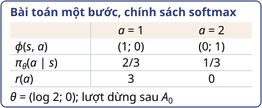
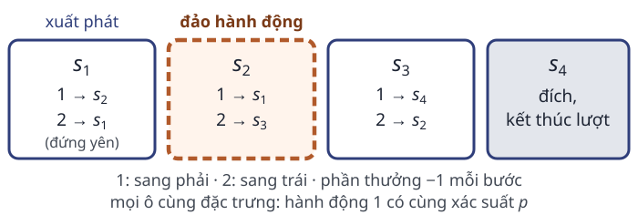
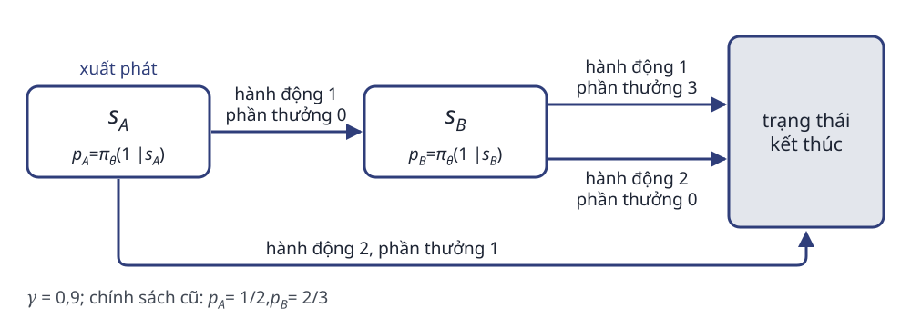
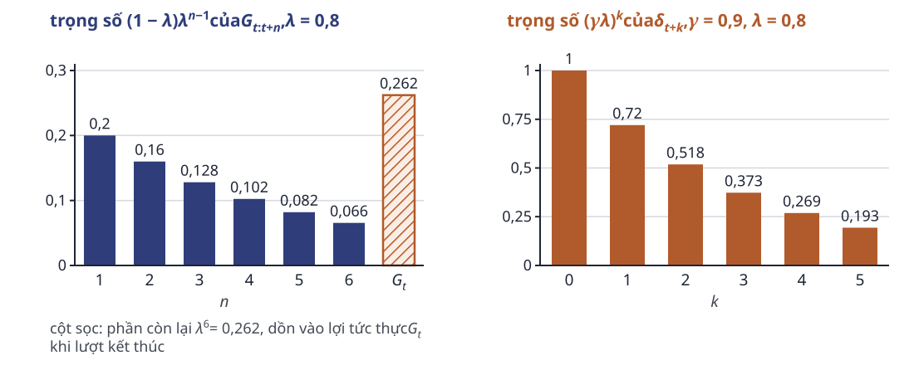
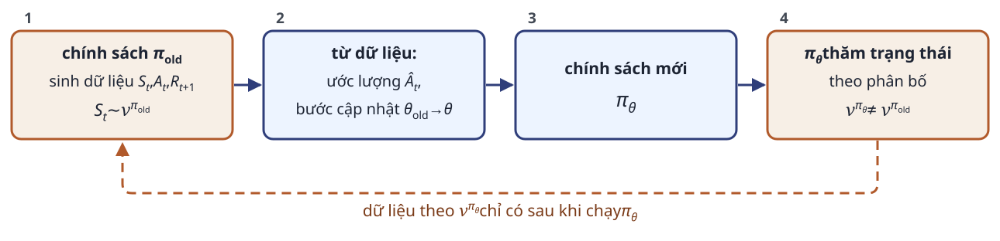
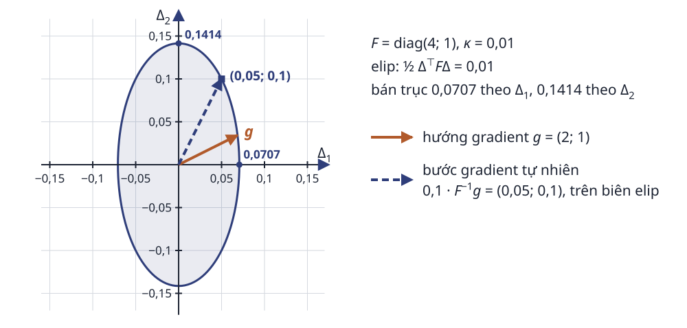
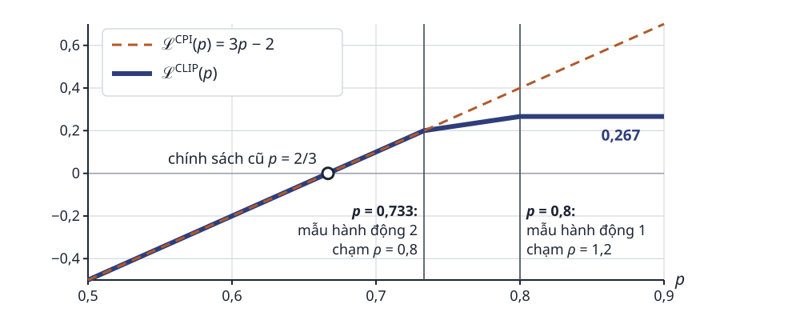
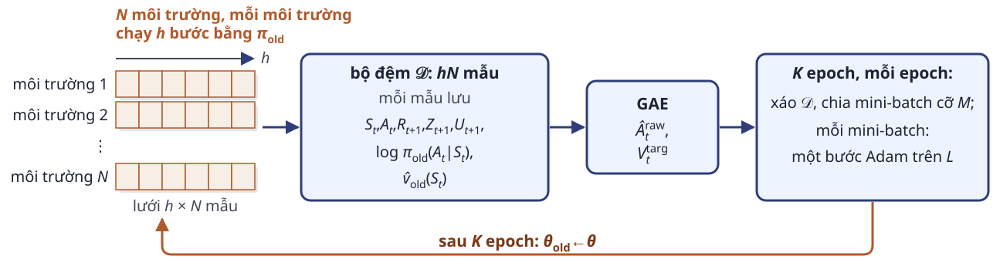

TRPO và PPO
Tối ưu chính sách miền tin cậy (TRPO) và tối ưu chính sách gần kề (PPO)
Bài 10 · Học tăng cường
Đường cơ sở giữ kỳ vọng của gradient;
Trường Đại học Công nghệ, Đại học Quốc gia Hà Nội
Năm học 2026–2027, học kỳ 1
REINFORCE của Bài 09 cho một mẫu không chệch của gradient từ mỗi lượt, nhưng phương sai lớn và mỗi lượt chỉ dùng cho một bước cập nhật. Nửa đầu của bài giảm phương sai: đường cơ sở giữ nguyên kỳ vọng; critic và ước lượng lợi thế tổng quát chỉ giữ kỳ vọng của gradient khi critic đúng, riêng GAE còn giữ được khi $\lambda=1$ trên lượt đầy đủ. Nửa sau giới hạn bước cập nhật khi dùng lại dữ liệu cũ. "Khoảng cách chính sách" ở đây là biến phân toàn phần hoặc KL trung bình theo phân bố trạng thái của chính sách cũ; TRPO ràng buộc KL trung bình. Tên tiếng Anh: TRPO là Trust Region Policy Optimization, PPO là Proximal Policy Optimization.
Nguồn: bài giảng gốc lecture10_policy_gradient_part2.pdf (2025–2026), trang 1–2; ghi chú bài giảng Bài 10, §1.1.
Tiên quyết và quy ước
Ký hiệu: $\mathbb E_{\pi_\theta}$ lấy theo $S_0\sim\mu_0$, $A_t\sim\pi_\theta(\cdot\mid S_t)$, $S_{t+1}\sim P(\cdot\mid S_t,A_t)$.
Ký hiệu Nghĩa
$\mathcal S$; $\mathcal A$ trạng thái chưa kết thúc; hành động, hữu hạn, $m$ phần tử ${R_{t+1};\ T;\ \gamma}$ phần thưởng sau $A_t$; bước kết thúc lượt, $G_T=0$; $\gamma\in[0,1)$ trong các định lý ${Z_{t+1};\ U_{t+1}}$ cờ kết thúc của MDP (termination); cờ cắt ngắn (truncation) ${\pi_{\mathrm{old}};\ \psi_t;\ H_t}$ chính sách sinh dữ liệu, tham số $\theta_{\mathrm{old}}$; ${\nabla_\theta\log\pi_\theta(A_t\mid S_t)}$, bằng $0$ khi ${t\ge T}$; lịch sử tới $S_t$
Lưu ý: $A_t$ là hành động; $A_\pi$, $\widehat A_t$ là lợi thế (advantage).
Ký hiệu $\log$ chỉ logarit tự nhiên. Bài 09 viết phân phối đầu là $\rho_0$; ở đây viết $\mu_0$ vì chữ $\rho$ dành cho tỉ số chính sách. Sau bước $T$, lượt ở trong một trạng thái hấp thụ có phần thưởng $0$, nên mọi giá trị và lợi thế tại đó bằng $0$. Hành lang ngắn trong các ví dụ mở đầu có $\gamma=1$, nằm ngoài giả thiết $\gamma<1$ của các định lý. Bài dùng hai loại trung bình: kỳ vọng có trọng số chiết khấu theo thời điểm thăm, và trung bình đều trên bộ đệm.
Nguồn: bài giảng gốc lecture10_policy_gradient_part2.pdf (2025–2026), trang 5; ghi chú bài giảng Bài 10, Bảng ký hiệu và quy ước đọc.
Tiên quyết và quy ước
Nhắc lại: dưới (G1)–(G4), REINFORCE ${\widehat g=\sum_{t<T}\gamma^tG_t\psi_t}$ có ${\mathbb E[\widehat g\mid\theta_{\mathrm{old}}]=\nabla_\theta J(\theta_{\mathrm{old}})}$ (Hệ quả 09.26).
(G1) $\mu_0$, $P$ không phụ thuộc $\theta$, $S_t$ Markov; (G2) $\pi_\theta(\cdot\mid s)$ khả vi, hỗ trợ cố định;
(G3) ${\lvert R_{t+1}\rvert\le R_{\max}}$, ${T\le T_{\max}}$; (G4) softmax hoặc Gauss, đặc trưng bị chặn.
${\mathbb E_{A\sim\pi_\theta(\cdot\mid s)}\bigl[c\,\psi_\theta(s,A)\bigr]=0}$ khi $c$ không phụ thuộc $A$.
Softmax hai hành động, $p=\pi_\theta(1\mid s)$: ${\psi_\theta(s,a)=\bigl(\mathbb 1[a=1]-p\bigr)(1;\,-1)}$.
${v_\pi(s)=\sum_a\pi(a\mid s)\,q_\pi(s,a)}$, ${q_\pi(s,a)=r(s,a)+\gamma\sum_{s'}P(s'\mid s,a)\,v_\pi(s').}$
Kỳ vọng bằng $0$ của hàm điểm là Mệnh đề 09.17; công thức hàm điểm của softmax hai hành động, $\psi_\theta(s,1)=(1-p)(1;\,-1)$ và $\psi_\theta(s,2)=-p\,(1;\,-1)$, là Mệnh đề 09.16; (G4) cho phép chính sách softmax, hoặc Gauss với độ lệch chuẩn cố định; "hỗ trợ cố định" nghĩa là miền hỗ trợ của $\pi_\theta(\cdot\mid s)$ không đổi theo $\theta$; hai công thức của $q_\pi$, $v_\pi$ là Mệnh đề 03.22, 03.23, với $r(s,a)$ là phần thưởng kỳ vọng của một bước. Lịch sử $H_t$ gồm mọi thứ đã quan sát khi chọn $A_t$; tính chất tháp $\mathbb E\bigl[\mathbb E[X\mid Y]\bigr]=\mathbb E[X]$ dùng trong chứng minh đường cơ sở. Bỏ trọng số $\gamma^t$ trong $\widehat g$ làm mất tính không chệch khi $\gamma<1$ (Ví dụ 09.21).
Nguồn: bài giảng gốc lecture10_policy_gradient_part2.pdf (2025–2026), trang 6–10; ghi chú bài giảng Bài 09, Định lý 09.23, Hệ quả 09.26; Bài 03, Mệnh đề 03.22, 03.23.
Mục tiêu học tập
Chứng minh đường cơ sở (baseline) không làm chệch; tính hai bước actor–critic.
Tính ước lượng lợi thế tổng quát (GAE) trên đoạn thu (rollout) có cắt ngắn.
Chứng minh bổ đề hiệu hiệu năng (performance difference lemma); tính hàm thay thế (surrogate objective) và chặn cải thiện.
Tính bước gradient tự nhiên (natural gradient) và gradient liên hợp (conjugate gradient).
Tính mục tiêu cắt (clipped objective) của tỉ số chính sách (probability ratio), approxKL, tỉ lệ cắt (clip fraction).
Đường cơ sở, GAE, chặn cải thiện, gradient tự nhiên và mục tiêu cắt là năm công cụ, mỗi công cụ có một sản phẩm kiểm được; GAE là viết tắt của generalized advantage estimation. Dòng 1: phương sai $\tfrac49(b-1)^2$ của ước lượng có đường cơ sở hằng $b$, và $p_A$ tăng từ $0{,}5$ lên $0{,}5436$ sau hai bước actor–critic. Dòng 2: $\widehat A_0=0{,}98$ khi lượt kết thúc, $3{,}572$ khi lượt bị cắt, cùng điều kiện γ-just. Dòng 3: $\Delta J=0{,}296$, hàm thay thế dự báo $0{,}26$, cận chặn cải thiện $-0{,}892$. Dòng 4: $\Delta^*=(0{,}15;\,-0{,}15)$ và $\Delta=(0{,}05;\,0{,}1)$. Dòng 5: $\mathcal L^{\mathrm{CLIP}}=0{,}2167$, approxKL $0{,}01737$, và nêu được rằng PPO không có cận KL.
Nguồn: bài giảng gốc lecture10_policy_gradient_part2.pdf (2025–2026), trang 2; ghi chú bài giảng Bài 10, Mục tiêu học tập 1–7.
Nội dung
Mở đầu và hai giới hạn của REINFORCE Đường cơ sở, hàm lợi thế và actor–critic Ước lượng lợi thế tổng quát Hàm thay thế và chặn cải thiện TRPO và gradient tự nhiên Tối ưu chính sách gần kề (PPO) Tổng kết và chuyển tiếp
Đọc trước: Sutton và Barto (2018), §13.4–13.5, §12.1–12.3; Schulman và cộng sự (2017), §3–5.
Đường cơ sở, critic và GAE giảm phương sai của ước lượng gradient (phần 2–3), tạo hàng trên của vấn đề trung tâm. Hàng dưới (phần 4–6) gồm chặn sai số khi đánh giá chính sách mới bằng dữ liệu cũ, giải bài toán miền tin cậy bằng TRPO, rồi thay ràng buộc bằng phép cắt tỉ số của PPO. Phần 7 đặt mỗi kết quả cạnh giả thiết của nó. Phần II của bài giảng gốc (A3C, DDPG, SAC) thuộc Bài 11.
Nguồn: bài giảng gốc lecture10_policy_gradient_part2.pdf (2025–2026), trang 3; Sutton và Barto (2018), §12.1–12.3, §13.4–13.5; Schulman và cộng sự (2017), §3–5.
Ví dụ: bài toán một bước, phương sai của REINFORCE

Nhu cầu: đo độ dao động của $\widehat g$; tính $\operatorname{Var}(\widehat g)$.
${\widehat g=(1;\,-1)}$ với xác suất $\tfrac23$, ${\widehat g=(0;\,0)}$ với xác suất $\tfrac13$; ${\mathbb E\widehat g=(\tfrac23;\,-\tfrac23)=\nabla_\theta J}$.
$$\operatorname{Var}(\widehat g)=\mathbb E\lVert\widehat g-\mathbb E\widehat g\rVert^2=\tfrac49.$$
Với $r=(4;\,1)$: kỳ vọng giữ nguyên, ${\operatorname{Var}(\widehat g)=\tfrac{16}9}$.
Diễn giải: cộng $1$ vào mọi phần thưởng không đổi gradient, phương sai tăng gấp bốn.
Vì lượt dừng sau một hành động, $\widehat g=r(A_0)\,\psi_\theta(s,A_0)$, với $\psi_\theta(s,1)=(\tfrac13;\,-\tfrac13)$. Mỗi tọa độ có phương sai $\tfrac23-\tfrac49=\tfrac29$, tổng $\tfrac49$. Với $r=(4;\,1)$, mỗi tọa độ có mô men bậc hai $\tfrac43$ và phương sai $\tfrac89$, tổng $\tfrac{16}9$. Kiểm lại bằng $\operatorname{Var}(\widehat g)=\mathbb E\lVert\widehat g\rVert^2-\lVert\nabla_\theta J\rVert^2$: $\tfrac43-\tfrac89=\tfrac49$. Cộng $1$ vào phần thưởng làm $J$ tăng đúng $1$ với mọi $\theta$, nên mức chung của phần thưởng không ảnh hưởng tới việc chọn hành động, nhưng làm các mẫu dao động mạnh hơn.
Nguồn: ghi chú bài giảng Bài 10, Ví dụ 10.1; bài giảng gốc lecture10_policy_gradient_part2.pdf (2025–2026), trang 9–10.
Ví dụ: hành lang ngắn, một lượt REINFORCE

$\theta=(0;\,0)$, $p=\tfrac12$, $\gamma=1$, $J=-12$, $\nabla_\theta J=(2;\,-2)$, $\alpha=0{,}1$.
Lượt $A_{0:4}=1,1,1,2,1$; $G_t=-5,-4,-3,-2,-1$. Tính $\widehat g$.
$\widehat g=\sum_tG_t\psi_t=(-5{,}5;\,5{,}5)$, ngược chiều $\nabla_\theta J$.
$\theta=(-0{,}55;\,0{,}55)$: $p$ từ $0{,}5$ xuống $0{,}2497$; $J$ từ $-12$ xuống $-18{,}68$.
Diễn giải: mọi $G_t<0$, nên mọi hành động đã chọn bị giảm xác suất.
Tại $\theta=(0;\,0)$, $\psi_\theta(s,1)=(\tfrac12;\,-\tfrac12)$, $\psi_\theta(s,2)=(-\tfrac12;\,\tfrac12)$. Tọa độ thứ nhất của $\widehat g$ là $\tfrac12(-5-4-3-1)+(-\tfrac12)(-2)=-5{,}5$. Lượt chọn hành động 1 bốn lần nên $p$ giảm, xa dần giá trị tốt nhất $p^*=2-\sqrt2\approx0{,}59$. Hành lang có $\gamma=1$ và độ dài lượt không bị chặn nên không thỏa (G3); ghi chú bài giảng, đoạn sau Ví dụ 10.4, nêu căn cứ để ước lượng vẫn không chệch: $T$ có đuôi hình học. Ước lượng không chệch vẫn có thể cho một bước ngược chiều gradient trên một lượt cụ thể.
Nguồn: ghi chú bài giảng Bài 10, Ví dụ 10.2; Sutton và Barto (2018), Ví dụ 13.1; bài giảng gốc lecture10_policy_gradient_part2.pdf (2025–2026), trang 10.
Ví dụ: hành lang ngắn, một bước theo đúng gradient
Cùng hành lang, từ $\theta=(0;\,0)$ đi theo đúng gradient $(2;\,-2)$; $p^*\approx0{,}59$ là xác suất tốt nhất.
Tính $p$ và $J$ sau một bước với $\alpha=0{,}1$ và $\alpha=0{,}5$.
$\alpha=0{,}1$: $\theta=(0{,}2;\,-0{,}2)$, $p=0{,}5987$, $J=-11{,}66$.
$\alpha=0{,}5$: $\theta=(1;\,-1)$, $p=0{,}8808>p^*$, $J=-21{,}32$.
Kết luận: với $\alpha=0{,}5$, $J$ giảm $9{,}32$.
Hệ quả 09.26 cần lượt của chính $\pi_{\theta_{\mathrm{old}}}$, nên mỗi lượt chỉ cho một bước cập nhật. Muốn mỗi lượt đem lại nhiều tiến bộ hơn thì cần bước lớn hơn. Cùng một hướng đúng, bước nhỏ làm $J$ tăng còn bước lớn làm $J$ giảm, vì $J$ chỉ gần tuyến tính trong một lân cận nhỏ của chính sách cũ. Bước lớn đổi chính sách, và chính sách mới thăm các trạng thái theo một phân bố khác. Hai giới hạn này không mâu thuẫn với Hệ quả 09.26: tính không chệch chỉ nói về trung bình tại đúng tham số đã sinh lượt.
Nguồn: ghi chú bài giảng Bài 10, §1.1, đoạn sau Ví dụ 10.2; bài giảng gốc lecture10_policy_gradient_part2.pdf (2025–2026), trang 4, 14.
Vấn đề trung tâm
Giảm phương sai, giữ kỳ vọng;
Đường cơ sở không phụ thuộc $A_t$ giữ kỳ vọng; sai số TD cần $\hat v=v_\pi$.
GAE không chệch cho gradient: lượt đầy đủ, critic cố định, $\lambda=1$ hoặc $\hat v=v_\pi$.
Lợi thế, $\nu$ chính xác: sai số hàm thay thế bị chặn theo khoảng cách.
TRPO xấp xỉ bậc hai, chỉ giữ khoảng cách mẫu dưới bán kính.
Mục tiêu cắt chặn dưới hàm thay thế mẫu, không chặn khoảng cách.
Vấn đề trung tâm có hai nửa: giảm phương sai của ước lượng gradient mà vẫn giữ kỳ vọng của nó, và dùng lại dữ liệu của $\pi_{\mathrm{old}}$ để chọn một bước cập nhật lớn mà chính sách mới không kém chính sách cũ. Năm dòng ứng với năm phần 2 đến 6, mỗi dòng đúng dưới một điều kiện. "Khoảng cách" là biến phân toàn phần hoặc KL trung bình theo phân bố trạng thái của chính sách cũ. Dòng 2 ghép hai kết quả: đường cơ sở giữ kỳ vọng với mọi critic cố định, còn sai số TD chỉ ước lượng đúng lợi thế khi critic đúng. Dòng 3 nói về ước lượng gradient, không khẳng định GAE không chệch cho lợi thế. Dòng 5: TRPO thực hành chỉ bảo đảm KL trung bình trên mẫu không vượt bán kính miền tin cậy.
Nguồn: ghi chú bài giảng Bài 10, §1.1; bài giảng gốc lecture10_policy_gradient_part2.pdf (2025–2026), trang 4, 14.
Hệ số của hàm điểm và độ lớn bước
Hàng trên: hệ số nhân với hàm điểm (phần 2–3).
Hàng dưới: độ lớn bước tính từ $\theta_{\mathrm{old}}$ (phần 4–6).
Hai hàng gặp nhau ở PPO kiểu actor–critic.
Hàng trên, viền liền, gồm đường cơ sở và critic, cho hai hệ số $G_t-\hat v(S_t)$ và sai số TD $\delta_t$, rồi GAE trộn hai hệ số đó. Hàng dưới, nét đứt, gồm hàm thay thế và chặn cải thiện, TRPO với KL trung bình không vượt $\kappa$, rồi PPO cắt tỉ số $\rho_t$ vào đoạn $[1-\epsilon,\,1+\epsilon]$. Khung cuối, viền đậm, là Thuật toán 10.49: GAE cho lợi thế, mục tiêu cắt cho chính sách.
Nguồn: ghi chú bài giảng Bài 10, §1.1, hình cấu trúc chương.
2. Đường cơ sở, hàm lợi thế và actor–criticMuốn giảm phương sai mà giữ kỳ vọng của gradient, phải trừ khỏi lợi tức một mức không phụ thuộc hành động đã chọn.
Đường cơ sở · Hàm lợi thế · Critic · Sai số TD · Actor–critic một bước
Tổng phương sai của REINFORCE trên bài toán một bước tăng từ $\tfrac49$ lên $\tfrac{16}9$ khi cộng $1$ vào phần thưởng, và một lượt hành lang cho bước ngược chiều gradient. Ở phần này, lợi tức được so với một mức của trạng thái, đại lượng còn lại được đặt tên là lợi thế, rồi lợi tức Monte Carlo được thay bằng một bước bootstrap của critic. Kết quả giao cho phần 3 là hai hệ số của hàm điểm: $G_t-\hat v(S_t)$ không chệch cho gradient, và sai số TD $\delta_t$ ước lượng lợi thế khi critic đúng.
Mức so sánh của trạng thái
Nhu cầu: tách khỏi $G_t$ phần chung không phân biệt hành động.
Bài toán một bước: cộng $1$ vào phần thưởng, phương sai từ $\tfrac49$ lên $\tfrac{16}9$.
Trực quan. So $G_t$ với một mức $b(S_t)$ chỉ phụ thuộc trạng thái.
Hệ số của $\psi_t$ là $G_t-b(S_t)$: dương thì tăng, âm thì giảm xác suất hành động đã chọn.
Một hành động tốt là hành động cho lợi tức cao hơn mức thường đạt được tại trạng thái đó. Với bài toán nhiều cần gạt (multi-armed bandit), mức so sánh là một số; trong một MDP, mức so sánh phải thay đổi theo trạng thái, vì ở trạng thái mà mọi hành động đều có giá trị cao, mức so sánh phải cao thì mới phân biệt được hành động tốt hơn. Mức so sánh không được phụ thuộc hành động đã chọn; Bước 2 của chứng minh phép trừ không làm chệch dùng đúng giả thiết này.
Nguồn: Sutton và Barto (2018), §13.4, tr. 329; ghi chú bài giảng Bài 10, §2.1; bài giảng gốc lecture10_policy_gradient_part2.pdf (2025–2026), trang 11.
Ví dụ: ba đường cơ sở trên bài toán một bước
Tính ${X_b=\bigl(r(A)-b\bigr)\psi_\theta(s,A)}$ với ${b\in\{0;\,2;\,1\}}$.
$\mathbb EX_b=(\tfrac23;\,-\tfrac23)$ với mọi $b$; $\operatorname{Var}(X_b)$: $\tfrac49$, $\tfrac49$, $0$.
$$\operatorname{Var}(X_b)=\tfrac49(b-1)^2\quad(b=3:\ \tfrac{16}9).$$
Lưu ý: đường cơ sở hằng tốt nhất là ${b^*=\mathbb E[R\lVert\psi\rVert^2]/\mathbb E\lVert\psi\rVert^2=1}$, khác ${v_\pi(s)=2}$ (Mệnh đề 10.3).
Với $b=1$, cả hai hành động cho $X_1=(\tfrac23;\,-\tfrac23)$, đúng bằng gradient, nên phương sai bằng $0$. Tổng quát, $\operatorname{Var}(X_b)=\operatorname{Var}(X_{b^*})+\mathbb E\lVert\psi\rVert^2(b-b^*)^2$ với $\mathbb E\lVert\psi\rVert^2=\tfrac49$: khai triển bậc hai theo $b$ cho đúng một cực tiểu. Đường cơ sở $b=3$ làm phương sai tăng lên $\tfrac{16}9$, nên trừ một đường cơ sở không luôn giảm phương sai. Giá trị trạng thái $v_\pi(s)=2$ không phải đường cơ sở tối ưu; mệnh đề này chỉ nói về bài toán một bước và đường cơ sở hằng.
Nguồn: ghi chú bài giảng Bài 10, Ví dụ 10.3, Mệnh đề 10.3; Greensmith, Bartlett và Baxter (2004), §5.
Đường cơ sở
Định nghĩa 10.1. Hàm bị chặn $b:\mathcal S\to\mathbb R$ gọi là đường cơ sở ; ước lượng có đường cơ sở là
$$\widehat g_b=\sum_{t=0}^{T-1}\gamma^t\bigl(G_t-b(S_t)\bigr)\psi_t.$$
Dãy bị chặn $B_t$ là đường cơ sở ngẫu nhiên nếu khi biết $(H_t,B_t)$, $A_t$ vẫn có phân phối $\pi_\theta(\cdot\mid S_t)$.
Với $X_b$ của bài toán một bước, $T=1$ và $\widehat g_b=X_b$. Với $b\equiv0$, $\widehat g_b$ là ước lượng REINFORCE. Hàm $\hat v(S_t,w)$ với $w$ giữ cố định trong lượt là một đường cơ sở; trung bình $G_0$ của các lượt khác, độc lập với lượt đang xét, là một đường cơ sở ngẫu nhiên. Lợi tức $G_t$ của chính lượt không là đường cơ sở, vì nó phụ thuộc $A_t$.
Nguồn: ghi chú bài giảng Bài 10, Định nghĩa 10.1; Sutton và Barto (2018), §13.4, (13.11).
Đường cơ sở không làm chệch
Mệnh đề 10.2. Giả thiết: (G1)–(G4); $\lvert b\rvert\le\bar b$; lượt sinh bởi $\pi_\theta$; $b$ cố định trong lượt.
Kết luận:
$$\mathbb E\Bigl[\sum_{t=0}^{T-1}\gamma^tb(S_t)\,\psi_t\Bigr]=0,\qquad\text{nên}\quad\mathbb E[\widehat g_b]=\nabla_\theta J(\theta).$$
Ý nghĩa: phép trừ giữ nguyên kỳ vọng của ước lượng, chỉ đổi độ phân tán của các mẫu.
Ba giả thiết có phản ví dụ riêng. Đường cơ sở phụ thuộc hành động: trên bài toán một bước, $b=r(A)$ cho $\widehat g_b\equiv0$. Hành động không lấy từ $\pi_\theta$: nếu chọn đều mỗi hành động với xác suất $\tfrac12$, $\mathbb E[b\,\psi]=b\,(-\tfrac16;\,\tfrac16)\ne0$ khi $b\ne0$. Đường cơ sở không bị chặn, như phân phối Cauchy: kỳ vọng không xác định. Mệnh đề nói về kỳ vọng, không nói về phương sai. Điều cần là $b$ không phụ thuộc $A_t$ khi đã biết lịch sử $H_t$, không phải $b$ độc lập với $A_t$.
Nguồn: ghi chú bài giảng Bài 10, Mệnh đề 10.2; bài giảng gốc lecture10_policy_gradient_part2.pdf (2025–2026), trang 11.
Chứng minh: đường cơ sở không làm chệch
Bước 1. $\widehat g_b=\widehat g-\sum_t\gamma^tb(S_t)\psi_t$ và ${\mathbb E[\widehat g]=\nabla_\theta J}$ (Hệ quả 09.26).
Bước 2. Khi biết $H_t$, $t<T$: $b(S_t)$ đã xác định và ${A_t\sim\pi_\theta(\cdot\mid S_t)}$, nên
$$\mathbb E\bigl[b(S_t)\psi_t\mid H_t\bigr]=b(S_t)\sum_a\pi_\theta(a\mid S_t)\,\psi_\theta(S_t,a)=0.$$
Bước 3. Tính chất tháp cho $\mathbb E[\gamma^tb(S_t)\psi_t]=0$; cộng $T_{\max}$ số hạng. $\square$
Ở Bước 1, với quy ước $\psi_t=0$ khi $t\ge T$ và giả thiết $T\le T_{\max}$ của (G3), tổng theo $t$ đến $T-1$ bằng tổng có $T_{\max}$ số hạng cố định, nên được đổi chỗ tổng và kỳ vọng. Bước 2 dùng hai giả thiết: $b(S_t)$ là hàm của $H_t$, không phụ thuộc $A_t$; và $A_t$ lấy từ chính $\pi_\theta(\cdot\mid S_t)$, vì chính sách và trạng thái có tính Markov theo (G1). Đẳng thức cuối là kỳ vọng bằng $0$ của hàm điểm, cần (G2). Bước 3 cần $b(S_t)\psi_t$ khả tích: $\lvert b\rvert\le\bar b$ và hàm điểm khả tích theo (G4). Với đường cơ sở ngẫu nhiên $B_t$, Bước 2 điều kiện theo $(H_t,B_t)$ thay cho $H_t$, và cùng chuỗi đẳng thức cho kỳ vọng $0$. Lập luận này là lập luận đã dùng cho phần thưởng quá khứ ở Bài 09 (Bổ đề 09.22).
Nguồn: ghi chú bài giảng Bài 10, chứng minh Mệnh đề 10.2.
Ví dụ: đường cơ sở trên lượt hành lang
Lượt hành lang: hành động $1,1,1,2,1$; trạng thái $s_1,s_2,s_1,s_2,s_3$; ${G_t=-5,-4,-3,-2,-1}$.
Đường cơ sở $b=v_\pi=(-12;\,-10;\,-6)$ tại $s_1,s_2,s_3$, với $p=\tfrac12$. Tính $\widehat g_b$.
$G_t-v_\pi(S_t)=7,6,9,8,5$.
$\widehat g_b=(9{,}5;\,-9{,}5)$, cùng chiều $\nabla_\theta J=(2;\,-2)$; không đường cơ sở: $(-5{,}5;\,5{,}5)$.
Diễn giải: số bước còn lại ${-G_t\le5}$ ít hơn số bước kỳ vọng ${-v_\pi(S_t)\ge6}$, nên mọi chênh lệch dương.
$v_\pi$ giải từ hệ ba phương trình Bellman với $p=\tfrac12$: $v(s_1)=v(s_2)-2$, $v(s_3)=\tfrac12v(s_2)-1$, rồi $v(s_2)=-10$; kiểm lại $v_\pi(s_1)=-12=J(\tfrac12)$. Tọa độ thứ nhất của $\widehat g_b$ là $\tfrac12(7+6+9+5)-\tfrac12\cdot8=9{,}5$. Với $\gamma=1$ và phần thưởng $-1$ mỗi bước, $-G_t$ là số bước còn lại của lượt và $-v_\pi(S_t)$ là số bước còn lại kỳ vọng; các cặp trên lượt là $(5;12)$, $(4;10)$, $(3;12)$, $(2;10)$, $(1;6)$. Bốn lần tăng xác suất cho hành động 1 thắng một lần tăng cho hành động 2. Trên lượt này, phép trừ đổi dấu của mọi hệ số. Một lượt dài hơn $12$ bước cho chênh lệch âm ở bước đầu.
Nguồn: ghi chú bài giảng Bài 10, Ví dụ 10.4; bài giảng gốc lecture10_policy_gradient_part2.pdf (2025–2026), trang 11.
Hàm lợi thế
Nhu cầu: gọi tên đại lượng mà các hệ số $7,6,9,8,5$ ước lượng.
Trực quan. Khi biết $(H_t,A_t)$, hệ số $G_t-v_\pi(S_t)$ có kỳ vọng ${q_\pi(S_t,A_t)-v_\pi(S_t)}$: dương khi $A_t$ tốt hơn mức chung của $S_t$.
Ví dụ. Bài toán một bước: $q_\pi=(3;\,0)$, $v_\pi=2$, hiệu $(1;\,-2)$; với $r=(4;\,1)$, hiệu vẫn là $(1;\,-2)$.
Định nghĩa 10.4. Với chính sách Markov dừng $\pi$, hàm lợi thế (advantage function) là
$$A_\pi(s,a)=q_\pi(s,a)-v_\pi(s),\qquad s\in\mathcal S,\ a\in\mathcal A;$$
$A_\pi=0$ sau khi lượt kết thúc.
Kỳ vọng có điều kiện của $G_t$ là Bổ đề 03.20(d). Các hệ số $7,6,9,8,5$ là các hiệu $G_t-v_\pi(S_t)$ trên lượt hành lang, tức mẫu của lợi thế. $A_\pi(s,a)>0$ nghĩa là thực hiện $a$ tại $s$ rồi theo $\pi$ cho lợi tức kỳ vọng lớn hơn theo $\pi$ ngay từ $s$. Cộng một hằng vào mọi phần thưởng không đổi lợi thế, khác với phương sai $\tfrac{16}9$ của REINFORCE. Lợi thế trung bình của chính sách khác $\pi'$ tại $s$ là $A_\pi(s,\pi')=\sum_a\pi'(a\mid s)A_\pi(s,a)$.
Nguồn: ghi chú bài giảng Bài 10, §2.3, Định nghĩa 10.4, Ví dụ 10.5; bài giảng gốc lecture10_policy_gradient_part2.pdf (2025–2026), trang 5, 8.
Gradient dạng lợi thế
Mệnh đề 10.5. (G1)–(G4), lượt sinh bởi $\pi_\theta$, $\pi=\pi_\theta$ Markov dừng. Khi đó (a) ${\sum_a\pi_\theta(a\mid s)A_\pi(s,a)=0}$ với mọi $s$; (b)
$$\nabla_\theta J(\theta)=\mathbb E_{\pi_\theta}\Bigl[\sum_{t=0}^{T-1}\gamma^tA_\pi(S_t,A_t)\,\psi_t\Bigr].$$
Bài toán một bước: ${\tfrac23\cdot1\cdot\psi(s,1)+\tfrac13(-2)\,\psi(s,2)=(\tfrac29;\,-\tfrac29)+(\tfrac49;\,-\tfrac49)=(\tfrac23;\,-\tfrac23)}$.
Chứng minh. Đường cơ sở $b=v_\pi$ không làm chệch, rồi tính chất tháp theo $(H_t,A_t)$.
Lợi thế trong (b) phải là của chính chính sách đang được lấy gradient. Kết luận (a) là lý do $A_\pi$ có trung bình $0$ tại mỗi trạng thái. Theo Hệ quả 09.24, (b) còn có dạng chiếm dụng $\nabla_\theta J=\tfrac1{1-\gamma}\mathbb E_{S\sim\nu^\pi,A\sim\pi_\theta}[A_\pi(S,A)\psi_\theta(S,A)]$, với $\nu^\pi$ là phân bố chiếm dụng chiết khấu. Từ đây, mọi phương pháp của bài chỉ cần một ước lượng của lợi thế.
Nguồn: ghi chú bài giảng Bài 10, Mệnh đề 10.5, Ví dụ 10.5.
Thuật toán REINFORCE có đường cơ sở
Thuật toán 10.6. Đầu vào: $\pi_\theta$, $\hat v(s,w)$, $\alpha_\theta$, $\alpha_w$, $\gamma\in[0,1)$; dừng sau $E$ lượt. Đầu ra: $\theta$, $w$.
$\theta_{\mathrm{old}}\leftarrow\theta$, $w_{\mathrm{old}}\leftarrow w$; thu một lượt bằng $\pi_{\theta_{\mathrm{old}}}$.
Tính $G_t$ lùi từ cuối lượt: $G_T=0$, $G_t=R_{t+1}+\gamma G_{t+1}$.
${w\leftarrow w_{\mathrm{old}}+\alpha_w\sum_t\bigl(G_t-\hat v(S_t,w_{\mathrm{old}})\bigr)\nabla_w\hat v(S_t,w_{\mathrm{old}})}$.
${\theta\leftarrow\theta_{\mathrm{old}}+\alpha_\theta\sum_t\gamma^t\bigl(G_t-\hat v(S_t,w_{\mathrm{old}})\bigr)\psi_t}$.
Lặp lại với lượt mới.
$\hat v$ dùng $w_{\mathrm{old}}$ cố định trong cả lượt, nên là một đường cơ sở hợp lệ theo Mệnh đề 10.2. Bước 3 hồi quy $\hat v$ về lợi tức Monte Carlo, không có trọng số $\gamma^t$; bước 4 có $\gamma^t$ như REINFORCE. Ví dụ trên lượt hành lang chỉ tính bước cập nhật chính sách, với $b=v_\pi$ và $\gamma=1$, ngoài giả thiết $\gamma<1$ của thuật toán; bước cập nhật critic không được tính tay. Thuật toán vẫn chờ lượt kết thúc, và $\hat v$ chỉ đánh giá $S_t$, nên theo Sutton và Barto (2018, §13.5) nó không là phương pháp actor–critic.
Nguồn: ghi chú bài giảng Bài 10, Thuật toán 10.6; Sutton và Barto (2018), §13.4, tr. 330.
Bài tập: đường cơ sở hợp lệ
Câu hỏi: trong ${\widehat g_B=\sum_t\gamma^t(G_t-B_t)\psi_t}$, xác định $B_t$ nào giữ ${\mathbb E[\widehat g_B]=\nabla_\theta J}$:
(a) $\hat v(S_t,w)$, $w$ cố định trong lượt; (b) trung bình $G_0$ của các lượt khác, độc lập;
(c) $B_t=r(A_t)$ trên bài toán một bước; (d) $B_t=G_t$ của chính lượt.
Lời giải: (a), (b) hợp lệ theo Mệnh đề 10.2: khi biết $(H_t,B_t)$, ${A_t\sim\pi_\theta(\cdot\mid S_t)}$.
(c), (d): $G_t-B_t=0$, nên ${\widehat g_B\equiv0\ne(\tfrac23;\,-\tfrac23)}$.
Gợi ý: kiểm xem khi biết $(H_t,B_t)$, hành động $A_t$ có còn phân phối $\pi_\theta(\cdot\mid S_t)$ không. Ở (b), các lượt khác phải độc lập với lượt đang xét; lỗi thường gặp là lấy trung bình $G_0$ của cả batch, kể cả lượt đang xét, khi đó $B_t$ chứa phần thưởng đến sau $A_t$. Ở (c) và (d), $B_t$ phụ thuộc $A_t$, nên Bước 2 của chứng minh không còn đúng. Bài tập kiểm việc nhận ra điều kiện $A_t\sim\pi_\theta(\cdot\mid S_t)$ khi biết $(H_t,B_t)$.
Nguồn: ghi chú bài giảng Bài 10, Bài tập 10.1.
Ví dụ: chuỗi hai trạng thái

$s_A$: hành động 1 sang $s_B$ ($r=0$), hành động 2 kết thúc ($r=1$); $s_B$: kết thúc, hành động 1: ${r=3}$, hành động 2: ${r=0}$; $\gamma=0{,}9$.
${\theta=(\theta_A;\,\theta_B)=(0;\,\log2)}$, $p_s=\sigma(\theta_s)$: $p_A=\tfrac12$, $p_B=\tfrac23$; $v_\pi(s_B)=2$, ${q_\pi(s_A,\cdot)=(1{,}8;\,1)}$, ${v_\pi(s_A)=1{,}4=J}$.
$A_\pi(s_A,\cdot)=(0{,}4;\,-0{,}4)$, $A_\pi(s_B,\cdot)=(1;\,-2)$; $\nabla_\theta J=(0{,}2;\,0{,}3)$.
Câu hỏi: kiểm (a) của Mệnh đề 10.5 tại $s_A$ và $s_B$.
Lời giải: $\tfrac12\cdot0{,}4+\tfrac12(-0{,}4)=0$; $\tfrac23\cdot1+\tfrac13(-2)=0$.
Chính sách có một tham số cho mỗi trạng thái, $\psi_\theta(s,1)=(1-p_s)e_s$, $\psi_\theta(s,2)=-p_se_s$, với $e_A=(1;\,0)$, $e_B=(0;\,1)$. Gradient tính trực tiếp từ $J=p_A\cdot2{,}7p_B+(1-p_A)$ là $(0{,}2;\,0{,}3)$. Theo gradient dạng lợi thế: bước $0$ ở $s_A$ đóng góp $0{,}2\,e_A$; bước $1$ ở $s_B$, xảy ra với xác suất $p_A=\tfrac12$ và trọng số $\gamma=0{,}9$, đóng góp $0{,}3\,e_B$. Chỉ hành động 1 tại $s_A$ dẫn tới $s_B$, nên lợi thế tại $s_A$ phụ thuộc $s_B$ qua $q_\pi(s_A,1)=\gamma v_\pi(s_B)$. Phân bố chiếm dụng của chuỗi là $(0{,}1;\,0{,}045)$.
Nguồn: ghi chú bài giảng Bài 10, Ví dụ 10.6; bài giảng gốc lecture10_policy_gradient_part2.pdf (2025–2026), trang 12.
Critic, actor và phương pháp actor–critic
Nhu cầu: cập nhật sau mỗi bước, không chờ hết lượt.
Trực quan. Chuỗi hai trạng thái, $\hat v=(1;\,1{,}5)$: sau một bước, ${0+0{,}9\cdot1{,}5=1{,}35>\hat v(s_A)=1}$, hành động 1 tốt hơn dự báo.
Định nghĩa 10.7. $\hat v(\cdot,w)$ gọi là critic khi đánh giá $A_t$ qua mục tiêu ${R_{t+1}+\gamma(1-Z_{t+1})\hat v(S_{t+1},w)}$; $\pi_\theta$ gọi là actor .
Phương pháp actor–critic cập nhật $\theta$ theo hệ số lập từ mục tiêu này, và $w$ để $\hat v$ xấp xỉ $v_{\pi_\theta}$.
REINFORCE có đường cơ sở chờ hết lượt mới cập nhật, và $\hat v$ trong đó chỉ đánh giá $S_t$. Mục tiêu một bước $1{,}35$ lớn hơn dự báo $1$ của critic, nên hành động 1 tốt hơn mức critic chờ đợi tại $s_A$; điều này biết được ngay sau một bước, không phải chờ hết lượt. Theo Sutton và Barto (2018, §13.5, tr. 331), phép bootstrap từ $S_{t+1}$ phân biệt critic với đường cơ sở; bài giảng gốc (tr. 12) dùng tên actor–critic theo nghĩa rộng hơn. Mặt nạ $(1-Z_{t+1})$ thay quy ước $\hat v=0$ tại trạng thái kết thúc (Định nghĩa 05.20, 07.19). Critic cập nhật theo kiểu bán gradient (semi-gradient) của Định nghĩa 07.21: mục tiêu được coi là hằng.
Nguồn: ghi chú bài giảng Bài 10, §2.4, Định nghĩa 10.7; bài giảng gốc lecture10_policy_gradient_part2.pdf (2025–2026), trang 12.
Critic, actor và phương pháp actor–critic
Nhắc lại: sai số TD (temporal-difference error) ${\delta_t=R_{t+1}+\gamma(1-Z_{t+1})\hat v(S_{t+1},w)-\hat v(S_t,w)}$.
Cùng một số $\delta_t$: sai lệch cho critic, hệ số của hàm điểm cho actor.
Sai số TD đã gặp ở Bài 05 và Bài 07; ở đây nó có mặt nạ kết thúc của Bài 08. Trên hình, critic cho hai giá trị, tại $S_t$ và tại $S_{t+1}$, để lập $\delta_t$. Khung nét đứt đánh dấu mục tiêu được dừng gradient. Mũi tên tới critic là cập nhật $w\leftarrow w+\alpha_w\delta_t\nabla_w\hat v(S_t,w)$; mũi tên tới actor là $\theta\leftarrow\theta+\alpha_\theta I\delta_t\psi_\theta(S_t,A_t)$, với $I=\gamma^t$. Trong actor, $\delta_t$ đứng ở vị trí của $G_t-\hat v(S_t,w)$ của REINFORCE có đường cơ sở, nhưng chỉ chứa một phần thưởng thực.
Nguồn: ghi chú bài giảng Bài 10, §2.4, hình sơ đồ actor–critic; Sutton và Barto (2018), §13.5.
Sai số TD và lợi thế
Mệnh đề 10.8. Giả thiết: MDP hữu hạn, Markov, $\gamma<1$; critic cố định; $Z_{t+1}=1$ chỉ khi kết thúc; $e=\hat v-v_\pi$.
Kết luận: (a) nếu $\hat v=v_\pi$ thì ${\mathbb E[\delta_t\mid S_t=s,A_t=a]=A_\pi(s,a)}$; (b) tổng quát
$$\mathbb E[\delta_t\mid S_t=s,A_t=a]=A_\pi(s,a)+\gamma\sum_{s'}P(s'\mid s,a)\,e(s')-e(s).$$
Critic đúng $(1{,}4;\,2)$: $\delta_0=0{,}4$ hoặc $-0{,}4$; $\delta_1=1$ (hành động 1 tại $s_B$).
Lưu ý: điều kiện theo $(S_t,A_t)$; với critic đúng, điều kiện theo $S_t$ cho kỳ vọng $0$.
Chứng minh. Kỳ vọng của mục tiêu một bước là ${q_\pi(s,a)+\gamma\sum_{s'}P(s'\mid s,a)e(s')}$.
Bỏ "critic đúng": trên bài toán một bước với $\hat v=1$, $\mathbb E[\delta_0\mid A_0=1]=2\ne A_\pi(s,1)=1$. Bỏ mặt nạ và gán giá trị $1$ cho trạng thái kết thúc: hành động 2 tại $s_A$ cho $\delta_0=0{,}5$ thay vì $-0{,}4$. Với critic đúng, $\mathbb E[\delta_t\mid S_t=s]=\sum_a\pi(a\mid s)A_\pi(s,a)=0$, nên $\delta_t$ chỉ đánh giá hành động khi đặt cạnh hành động đã chọn. Độ chệch trong (b) không do bootstrap gây ra: critic học bằng Monte Carlo nhưng chưa đúng cũng cho số hạng $e$ (Sutton và Barto, 2018, §13.5).
Nguồn: ghi chú bài giảng Bài 10, Mệnh đề 10.8 và chứng minh; bài giảng gốc lecture10_policy_gradient_part2.pdf (2025–2026), trang 12.
Ví dụ: hai bước actor–critic
$w=(1;\,1{,}5)$, $\theta=(0;\,\log2)$, $\alpha_w=0{,}5$, $\alpha_\theta=1$; lượt $s_A\xrightarrow{1}s_B\xrightarrow{1}$ kết thúc, $R=(0;\,3)$. Tính mục tiêu, sai số TD, giá trị mới.
$t$ $I$ mục tiêu $\delta_t$ $w$ mới hướng actor $\theta$ mới $p$ mới
$0$ $1$ $1{,}35$ $0{,}35$ ${w_A=1{,}175}$ $(0{,}175;\,0)$ ${\theta_A=0{,}175}$ ${p_A=0{,}5436}$ $1$ $0{,}9$ $3$ $1{,}5$ ${w_B=2{,}25}$ $(0;\,0{,}45)$ ${\theta_B=1{,}1431}$ ${p_B=0{,}7583}$
Diễn giải: $\delta_0=0{,}35\ne A_\pi(s_A,1)=0{,}4$ vì critic sai.
Critic dạng bảng $\hat v(s,w)=w_s$, nên $\nabla_w\hat v(s,w)=e_s$. Thừa số $I=\gamma^t$ đóng vai trọng số $\gamma^t$ của định lý gradient chính sách. Ở bước $0$: mục tiêu $0+0{,}9\cdot1{,}5=1{,}35$, hướng $1\cdot0{,}35\cdot0{,}5\,e_A$. Ở bước $1$, mặt nạ bằng $0$ vì lượt kết thúc, nên mục tiêu là $3$; hướng $0{,}9\cdot1{,}5\cdot\tfrac13\,e_B$. Kiểm: $\sigma(0{,}175)=1/(1+0{,}8395)=0{,}5436$, $\sigma(1{,}1431)=1/(1+0{,}3188)=0{,}7583$. Cả hai sai số TD dương nên xác suất của hai hành động đã chọn đều tăng.
Nguồn: ghi chú bài giảng Bài 10, Ví dụ 10.7.
Thuật toán actor–critic một bước
Thuật toán 10.9. Đầu vào: $\pi_\theta$, $\hat v(s,w)$, $\alpha_\theta$, $\alpha_w$, $\gamma\in[0,1)$; dừng sau $E$ lượt. Đầu ra: $\theta$, $w$. Mỗi lượt: $I\leftarrow1$, lặp tới khi kết thúc:
$A\sim\pi_\theta(\cdot\mid S)$; quan sát $R$, $S'$, $Z$.
$\delta\leftarrow R+\gamma(1-Z)\,\hat v(S',w)-\hat v(S,w)$.
$w\leftarrow w+\alpha_w\,\delta\,\nabla_w\hat v(S,w)$.
$\theta\leftarrow\theta+\alpha_\theta\,I\,\delta\,\psi_\theta(S,A)$.
$I\leftarrow\gamma I$, $S\leftarrow S'$.
Thuật toán lặp đúng hai phép tính của bảng hai bước actor–critic: cập nhật critic, rồi cập nhật actor với cùng $\delta$. Trong cập nhật actor, $\delta$ là một hệ số đã dừng gradient. Khi lượt bị cắt ngắn ($U=1$, $Z=0$), mục tiêu vẫn bootstrap từ quan sát cuối. Bộ nhớ không phụ thuộc độ dài lượt, vì thuật toán cập nhật ngay sau từng bước mà không lưu lượt. Phần $-\hat v(S,w)$ là một đường cơ sở hợp lệ, nhưng mục tiêu một bước thay cho $G_t$ làm ước lượng gradient chệch khi critic sai (Nhận xét 10.10).
Nguồn: ghi chú bài giảng Bài 10, Thuật toán 10.9, Nhận xét 10.10; Sutton và Barto (2018), §13.5, (13.12)–(13.14); bài giảng gốc lecture10_policy_gradient_part2.pdf (2025–2026), trang 12–13.
Bài tập: sai số TD khi critic sai
Câu hỏi: chuỗi hai trạng thái, $v_\pi=(1{,}4;\,2)$, critic cố định $\hat v=(1;\,1{,}5)$; tọa độ $\theta_A$ của $\psi_\theta(s_A,a)$ là $\pm0{,}5$.
Tính $\mathbb E[\delta_0\mid s_A,a]$ cho hai hành động và tọa độ $\theta_A$ của $\mathbb E[\delta_0\psi_0]$.
Lời giải: $e=\hat v-v_\pi=(-0{,}4;\,-0{,}5)$.
Hành động 1: $0{,}4+0{,}9\cdot(-0{,}5)+0{,}4=0{,}35$.
Hành động 2 kết thúc lượt: $-0{,}4+0+0{,}4=0$.
Tọa độ $\theta_A$: ${\tfrac12\cdot0{,}35\cdot0{,}5+\tfrac12\cdot0\cdot(-0{,}5)=0{,}0875\ne0{,}2}$.
Gợi ý: lập $e=\hat v-v_\pi$, rồi dùng (b) của mệnh đề về sai số TD. Hành động 2 kết thúc lượt, nên không có số hạng $\gamma e(s')$. Hai độ chệch, $-0{,}05$ và $+0{,}4$, khác nhau giữa hai hành động, nên không bị khử khi nhân với hàm điểm: actor một bước bị chệch dù mỗi sai số TD có dấu đúng. Kiểm trực tiếp: $\delta_0=0+0{,}9\cdot1{,}5-1=0{,}35$ và $\delta_0=1-1=0$. Bài tập kiểm việc dùng dạng tổng quát của mệnh đề sai số TD khi critic sai. Hai hệ số $\delta_t$ và $G_t-\hat v(S_t)$ là hai đầu một bước và Monte Carlo của cùng một lợi thế.
Nguồn: ghi chú bài giảng Bài 10, Bài tập 10.5.
3. Ước lượng lợi thế tổng quátMuốn chọn mức trung gian giữa sai số TD và lợi tức Monte Carlo, phải trộn các lợi tức nhiều bước bằng một tham số.
Lợi tức n bước · Lợi tức λ · GAE · Tính không chệch cho gradient · Đoạn thu
Trên lượt của ví dụ hai bước actor–critic, sai số TD cho $0{,}35$, còn hệ số Monte Carlo $G_0-\hat v(s_A)$ cho $1{,}7$, trong khi lợi thế đúng là $A_\pi(s_A,1)=0{,}4$. Các lợi tức $n$ bước nối hai đầu này, và tham số $\lambda$ trộn chúng thành GAE; GAE giữ ước lượng gradient không chệch khi $\lambda=1$ trên lượt đầy đủ hoặc khi critic đúng, và được tính lùi trên dữ liệu có cờ kết thúc và cờ cắt ngắn. Kết quả giao cho phần 6 là $\widehat A_t$ và mục tiêu của critic $V^{\mathrm{targ}}_t$.
Ví dụ: ba ước lượng lợi thế trên một lượt
Nhu cầu: chọn số phần thưởng thực trong ước lượng lợi thế.
Lượt $s_A\xrightarrow{1}s_B\xrightarrow{1}$ kết thúc, $R=(0;\,3)$, $\gamma=0{,}9$, $\hat v=(1;\,1{,}5)$: $\delta_0=0{,}35$, $\delta_1=1{,}5$. Tính ba ước lượng.
Một bước: $0{,}35$; hai bước (Monte Carlo): $0{,}9\cdot3-1=1{,}7$; lợi thế đúng $0{,}4$.
Trộn với trọng số $0{,}2$ và $0{,}8$: $0{,}2\cdot0{,}35+0{,}8\cdot1{,}7=1{,}43$.
Kiểm: $1{,}7=\delta_0+\gamma\delta_1$; $1{,}43=\delta_0+0{,}9\cdot0{,}8\,\delta_1$.
Ước lượng một bước dựa vào critic sai, vì $\hat v(s_B)=1{,}5$ khác $v_\pi(s_B)=2$. Ước lượng Monte Carlo dựa vào một phần thưởng ngẫu nhiên $R_2$, bằng $3$ với xác suất $\tfrac23$ và $0$ với xác suất $\tfrac13$. Ba số khác nhau trên cùng một lượt, và không số nào bằng $0{,}4$; so sánh trên một lượt không cho biết kỳ vọng của từng ước lượng. Hệ số $0{,}72$ là $\gamma\lambda$ với $\lambda=0{,}8$: mọi ước lượng ở đây là tổng có trọng số của các sai số TD.
Nguồn: ghi chú bài giảng Bài 10, Ví dụ 10.8; bài giảng gốc lecture10_policy_gradient_part2.pdf (2025–2026), trang 13.
Lợi tức $n$ bước
Trực quan. Dùng $n$ phần thưởng thực rồi bootstrap từ $\hat v(S_{t+n})$.
Định nghĩa 10.11. Với $w$ cố định, lợi tức $n$ bước (n-step return) từ bước $t<T$ là
$$G_{t:t+n}=\begin{cases}\sum_{k=0}^{n-1}\gamma^kR_{t+k+1}+\gamma^n\hat v(S_{t+n},w), & t+n<T,\\ G_t, & t+n\ge T;\end{cases}$$
$\widehat A^{(n)}_t=G_{t:t+n}-\hat v(S_t,w)$ gọi là lợi thế $n$ bước.
Bổ đề. Với $w$ cố định trong lượt và $\delta_k=0$ khi $k\ge T$: ${\widehat A^{(n)}_t=\sum_{k=0}^{n-1}\gamma^k\delta_{t+k}}$.
Chứng minh bổ đề: thay $\delta_{t+k}$ vào tổng; các số hạng $\hat v(S_{t+j})$, $1\le j<n$, triệt tiêu lồng nhau. Khi lượt kết thúc trước bước $t+n$, lợi tức $n$ bước là lợi tức thực. Trường hợp $n=1$ cho $\widehat A^{(1)}_t=\delta_t$; trường hợp $n\ge T-t$ cho $G_t-\hat v(S_t)$. Trên lượt của chuỗi hai trạng thái, $\widehat A^{(1)}_0=0{,}35$ và $\widehat A^{(2)}_0=1{,}7$. Bổ đề cần cùng một $w$ cho mọi sai số TD: nếu $\hat v(S_{t+1})$ trong $\delta_t$ và trong $\delta_{t+1}$ dùng hai tham số khác nhau, hai số hạng không triệt tiêu.
Nguồn: ghi chú bài giảng Bài 10, Định nghĩa 10.11, Bổ đề 10.12; Sutton và Barto (2018), §7.1, (7.1).
Lợi tức $\lambda$ và GAE
Trực quan. Trọng số $(1-\lambda)\lambda^{n-1}$ cộng lại bằng $1$; phần dư $\lambda^{T-t-1}$ dồn vào lợi tức thực.
$\lambda$ nhỏ dựa vào critic; $\lambda$ gần $1$ dựa vào phần thưởng thực.

Định nghĩa 10.13. Lợi tức λ (λ-return): ${G^\lambda_t=(1-\lambda)\sum_{n=1}^{T-t-1}\lambda^{n-1}G_{t:t+n}+\lambda^{T-t-1}G_t}$;
$\widehat A_t=G^\lambda_t-\hat v(S_t,w)$ gọi là ước lượng lợi thế tổng quát (GAE); $\lambda=1$: $G^\lambda_t=G_t$.
Lượt trên, $\lambda=0{,}8$: $G^\lambda_0=0{,}2\cdot1{,}35+0{,}8\cdot2{,}7=2{,}43$, $\widehat A_0=1{,}43$.
Nửa trái của hình là trọng số của từng lợi tức $n$ bước trong $G^\lambda_t$ với $\lambda=0{,}8$; cột sọc là phần $\lambda^6=0{,}262$ dồn vào lợi tức thực khi còn $7$ bước tới kết thúc. Nửa phải là trọng số $(\gamma\lambda)^k$ của sai số TD thứ $k$, tức dạng tổng của GAE; hai nửa mô tả cùng một ước lượng theo hai cách đếm. Với $\lambda=0$, $\widehat A_t=\delta_t$; với $\lambda=1$, $\widehat A_t=G_t-\hat v(S_t,w)$, hệ số Monte Carlo của REINFORCE có đường cơ sở. Dạng thứ hai của $G^\lambda_t$ là (12.3) của Sutton và Barto.
Nguồn: ghi chú bài giảng Bài 10, §3.2, Định nghĩa 10.13; Sutton và Barto (2018), §12.1, (12.3); bài giảng gốc lecture10_policy_gradient_part2.pdf (2025–2026), trang 13.
Dạng tổng và truy hồi của GAE
Mệnh đề 10.14. Critic cố định trong lượt, $\lambda\in[0,1]$, $\delta_k=0$ khi $k\ge T$. Khi đó (a)
$$\widehat A_t=\sum_{k=0}^{T-t-1}(\gamma\lambda)^k\,\delta_{t+k};$$
(b) $\lambda=0$: $\widehat A_t=\delta_t$; $\lambda=1$: $\widehat A_t=G_t-\hat v(S_t,w)$;
(c) ${\widehat A_t=\delta_t+\gamma\lambda(1-Z_{t+1})\widehat A_{t+1}}$, $\widehat A_T=0$. Kiểm: ${0{,}35+0{,}72\cdot1{,}5=1{,}43}$.
Chứng minh. Thay bổ đề lợi thế $n$ bước, đổi thứ tự lấy tổng: ${(1-\lambda)\sum_{n>k}\lambda^{n-1}=\lambda^k}$; (c): tách số hạng $k=0$.
Bước đổi thứ tự lấy tổng hợp lệ vì chỉ hữu hạn sai số TD khác $0$ và chuỗi $\sum_n\lambda^{n-1}$ hội tụ tuyệt đối: $\widehat A_t=(1-\lambda)\sum_n\lambda^{n-1}\sum_{k<n}\gamma^k\delta_{t+k}=\sum_k\gamma^k\delta_{t+k}(1-\lambda)\sum_{n>k}\lambda^{n-1}$. Trường hợp $\lambda=1$ phải xử lý riêng, vì thừa số $1-\lambda$ bằng $0$: định nghĩa cho $G_t-\hat v(S_t)$, và bổ đề với $n=T-t$ cho cùng tổng. Ở (c), khi $Z_{t+1}=1$ thì $t+1=T$ và $\widehat A_{t+1}=0$, nên mặt nạ không đổi kết quả trên một lượt đầy đủ. Mệnh đề là đồng nhất thức trên từng lượt; nó không nói gì về kỳ vọng hay phương sai.
Nguồn: ghi chú bài giảng Bài 10, Mệnh đề 10.14 và chứng minh; Schulman và cộng sự (2016), (16).
Ví dụ: GAE và gradient trên chuỗi hai trạng thái
Nhu cầu: xác định GAE có làm chệch ước lượng gradient hay không.
$\hat v=(1;\,1{,}5)$, $p_A=\tfrac12$, $p_B=\tfrac23$, ${A_\pi(s_A,\cdot)=(0{,}4;\,-0{,}4)}$; tọa độ $\theta_A$ của $\psi_\theta(s_A,a)$: $\pm0{,}5$. Tính theo $\lambda$:
Đại lượng $\lambda=0$ $\lambda=0{,}8$ $\lambda=1$
${\mathbb E[\widehat A_0\mid s_A,1]=0{,}35+0{,}45\lambda}$ $0{,}35$ $0{,}71$ $0{,}8$ $\mathbb E[\widehat A_0\mid s_A,2]$ $0$ $0$ $0$ tọa độ $\theta_A$ của $\mathbb E[\widehat A_0\psi_0]$; đúng: $0{,}2$ $0{,}0875$ $0{,}1775$ $0{,}2$
Diễn giải: với $\lambda=1$, độ chệch $+0{,}4$ như nhau cho hai hành động nên bị hàm điểm khử.
Với hành động 1, $\delta_0=0{,}35$ tất định, còn $\delta_1=R_2-1{,}5$ có kỳ vọng $0{,}5$, nên $\mathbb E[\widehat A_0\mid s_A,1]=0{,}35+0{,}9\lambda\cdot0{,}5$. Hành động 2 kết thúc lượt với phần thưởng $1$, nên $\widehat A_0=0$ với mọi $\lambda$. Với $\lambda=0$, hai độ chệch $-0{,}05$ và $+0{,}4$ khác nhau nên không bị khử. Các số cho thấy "chệch cho lợi thế" và "chệch cho gradient" là hai việc khác nhau.
Nguồn: ghi chú bài giảng Bài 10, Ví dụ 10.9; bài giảng gốc lecture10_policy_gradient_part2.pdf (2025–2026), trang 13.
GAE và tính không chệch cho gradient
Mệnh đề 10.15. Giả thiết: (G1)–(G4), MDP hữu hạn; critic cố định, bị chặn; GAE tính trên lượt đầy đủ.
Kết luận: nếu $\lambda=1$ hoặc $\hat v=v_\pi$ thì ${\mathbb E[\widehat A_t\psi_t]=\mathbb E[A_\pi(S_t,A_t)\psi_t]}$, nên
$$\mathbb E\Bigl[\sum_{t=0}^{T-1}\gamma^t\widehat A_t\,\psi_t\Bigr]=\nabla_\theta J(\theta);$$
ước lượng như vậy gọi là γ-just .
Lưu ý: mệnh đề không khẳng định ${\mathbb E[\widehat A_t\mid S_t,A_t]=A_\pi}$; trên chuỗi, $0{,}8\ne0{,}4$.
Chứng minh. $\lambda=1$: đường cơ sở $b=\hat v$; $\hat v=v_\pi$: mỗi $\delta_{t+k}$ ước lượng $A_\pi$.
Trên chuỗi hai trạng thái với $\lambda=1$, $\mathbb E[\widehat A_0\mid s_A,1]=0{,}8$, trong khi $A_\pi(s_A,1)=0{,}4$. Trường hợp $\lambda=1$ là Mệnh đề 10.2 với $b=\hat v$. Trường hợp $\hat v=v_\pi$ dùng Mệnh đề 10.8(a) cho từng sai số TD $\delta_{t+k}$: mỗi số hạng $k\ge1$ có $\mathbb E[\delta_{t+k}\psi_t]=0$, vì kỳ vọng của lợi thế tại bước $t+k$ khi biết lịch sử bằng $0$. Lượt bị cắt phá điều kiện thứ nhất: nếu lượt của chuỗi bị cắt sau bước $0$, kể cả với $\lambda=1$ tọa độ $\theta_A$ là $0{,}0875$. Schulman và cộng sự (2016, §3) nêu định tính một đánh đổi giữa độ chệch và phương sai theo $\lambda$, và ghi rằng về thực nghiệm $\lambda$ tốt thường nhỏ hơn hẳn $\gamma$ tốt. Critic học được không bằng $v_\pi$ và các cài đặt dùng $\lambda<1$, nên trong thực hành mệnh đề không cho bảo đảm.
Nguồn: ghi chú bài giảng Bài 10, Mệnh đề 10.15; Schulman và cộng sự (2016), Định nghĩa 1, Mệnh đề 1, §3.
Ví dụ: kết thúc và cắt ngắn
Nhu cầu: tính GAE trên đoạn thu có lượt kết thúc, bị cắt, hoặc dở ở biên.
$R_1=1$, $R_2=2$, $\hat v(S_0)=2$, $\hat v(S_1)=3$, $\gamma=0{,}9$, $\lambda=0{,}8$; $\delta_0=1{,}7$. Tính $\widehat A_0$.
trường hợp $t$ $R_{t+1}$ $Z_{t+1}$ $U_{t+1}$ $\hat v_{\mathrm{old}}(S_t)$ $\delta_t$ $\widehat A_t$ $\widehat A_0$
(i) kết thúc $1$ $2$ $1$ $0$ $3$ $-1$ $-1$ $0{,}98$ (ii) cắt, $\hat v(S_2)=4$ $1$ $2$ $0$ $1$ $3$ $2{,}6$ $2{,}6$ $3{,}572$
Kết luận: cùng phần thưởng và critic, hai cờ cho hai kết quả cách nhau $2{,}592$.
Nhắc lại hai cờ: $Z_{t+1}=1$ khi MDP kết thúc; $U_{t+1}=1$ khi việc thu dừng vì một giới hạn ngoài MDP, như giới hạn thời gian. Khi $Z_{t+1}=1$, mục tiêu một bước chỉ còn $R_{t+1}$; khi $U_{t+1}=1$ và $Z_{t+1}=0$, mục tiêu vẫn bootstrap, ở đây bằng $R_2+\gamma\hat v(S_2)$ của quan sát cuối. Trường hợp (i): $\widehat A_0=1{,}7+0{,}72\cdot(-1)$. Trường hợp (ii): $\widehat A_0=1{,}7+0{,}72\cdot2{,}6$. Kiểm (ii) bằng lợi tức λ cắt (truncated λ-return): $0{,}2\cdot3{,}7+0{,}8\cdot6{,}04=5{,}572=\widehat A_0+\hat v(S_0)$.
Nguồn: ghi chú bài giảng Bài 10, §3.3, Ví dụ 10.10; Bài 08, Định nghĩa 08.4, 08.6; bài giảng gốc lecture10_policy_gradient_part2.pdf (2025–2026), trang 24.
Thuật toán tính GAE lùi trên đoạn thu
Thuật toán 10.16. Đầu vào: đoạn thu $h$ bước: $R_{t+1}$, $Z_{t+1}$, $U_{t+1}$, ${V_t=\hat v_{\mathrm{old}}(S_t)}$, $t\le h$; $V'_{t+1}$ của quan sát cuối khi cắt. Đầu ra: $\widehat A_t$, $V^{\mathrm{targ}}_t$.
Nếu $Z_h=0$ và $U_h=0$, coi như cắt ngắn: $U_h\leftarrow1$, $V'_h\leftarrow V_h$.
${\delta_t=R_{t+1}+\gamma(1-Z_{t+1})V^{\mathrm{next}}_{t+1}-V_t}$; $V^{\mathrm{next}}=V'$ khi $U=1$, ngược lại $V$.
$\widehat A_h=0$; lùi: ${\widehat A_t=\delta_t+\gamma\lambda(1-Z_{t+1})(1-U_{t+1})\widehat A_{t+1}}$.
$V^{\mathrm{targ}}_t=\widehat A_t+V_t$.
Lưu ý: ghi cắt ngắn thành $Z=1$ xóa $\gamma\hat v$ của quan sát cuối.
$V_h$ là giá trị của quan sát $S_h$ ngay sau bước cuối của đoạn; bước 1 dùng nó khi lượt còn dở ở biên đoạn. Thuật toán chạy độc lập trên từng môi trường, với $\gamma$, $\lambda$ cố định và $w_{\mathrm{old}}$ giữ nguyên trong cả phép tính. Bước 2 dùng mặt nạ $(1-Z)$: chỉ kết thúc thật mới bỏ phần bootstrap. Bước 3 thêm $(1-U)$, vì sau một bước cắt ngắn, bước kế trong bộ đệm thuộc lượt khác. Giá trị bootstrap sau bước cắt là của quan sát cuối của lượt cũ, không phải của quan sát đầu lượt mới. Chi phí $O(hN)$. Ước lượng thực hành $\sum_t\widehat A_t\psi_t$ bỏ $\gamma^t$, nên kể cả khi γ-just, kỳ vọng của nó không phải $\nabla_\theta J$ (Nhận xét 10.17).
Nguồn: ghi chú bài giảng Bài 10, Thuật toán 10.16, Nhận xét 10.17; bài giảng gốc lecture10_policy_gradient_part2.pdf (2025–2026), trang 24.
Bài tập: GAE trên đoạn thu
Câu hỏi: với $\gamma=0{,}9$, $\lambda=0{,}8$, quan sát cuối sau $U_2$ có $\hat v=4$, tính $\delta_t$, $\widehat A_t$, $V^{\mathrm{targ}}_t$.
$t$ $R_{t+1}$ $Z_{t+1}$ $U_{t+1}$ $\hat v_{\mathrm{old}}(S_t)$ $\delta_t$ $\widehat A_t$ $V^{\mathrm{targ}}_t$
$0$ $1$ $0$ $0$ $2$ $1{,}7$ $3{,}572$ $5{,}572$ $1$ $2$ $0$ $1$ $3$ $2{,}6$ $2{,}6$ $5{,}6$ $2$ $0$ $0$ $0$ $1$ $0{,}8$ $1{,}52$ $2{,}52$ $3$ $3$ $1$ $0$ $2$ $1$ $1$ $3$
Lời giải: truy hồi ngắt ở $U_2$ và $Z_4$; $\widehat A_0$ trùng trường hợp (ii) của ví dụ kết thúc và cắt ngắn.
Gợi ý: ở bước $1$, giá trị kế là của quan sát cuối, không phải của $S_2$. Lời giải: $\delta_1=2+0{,}9\cdot4-3=2{,}6$; $\delta_2=0+0{,}9\cdot2-1=0{,}8$; $\delta_3=3-2=1$ vì $Z_4=1$. Truy hồi: $\widehat A_2=0{,}8+0{,}72\cdot1=1{,}52$; $\widehat A_1=2{,}6$ vì $U_2=1$; $\widehat A_0=1{,}7+0{,}72\cdot2{,}6=3{,}572$. Hai lỗi thường gặp: bootstrap bằng $\hat v(S_2)=1$ của lượt mới, cho $\delta_1=2+0{,}9-3=-0{,}1$; không ngắt truy hồi ở $U_2$, cho $\widehat A_1=2{,}6+0{,}72\cdot1{,}52=3{,}6944$. Bài tập kiểm hai việc: ngắt truy hồi ở $U$ và $Z$, và bootstrap bằng quan sát cuối. Mọi ước lượng ở đây vẫn cần đoạn thu của chính $\pi_{\mathrm{old}}$; dùng dữ liệu đó cho một bước lớn đòi hỏi đánh giá chính sách mới bằng dữ liệu cũ.
Nguồn: ghi chú bài giảng Bài 10, Bài tập 10.7.
4. Hàm thay thế và chặn cải thiệnMuốn dùng dữ liệu cũ cho một bước lớn, phải chặn sai số khi đánh giá chính sách mới bằng dữ liệu đó.
Hiệu hiệu năng · Hàm thay thế · Phân kỳ KL · Chặn cải thiện · Miền tin cậy
Mọi ước lượng của phần 2 và 3 cần dữ liệu của chính sách đang được cập nhật; trên hành lang ngắn, một bước lớn theo đúng gradient đã làm $J$ giảm $9{,}32$. Cần một công thức chính xác cho $J(\pi')-J(\pi)$, một xấp xỉ của nó tính được từ dữ liệu của $\pi$, và một chặn cho sai số của xấp xỉ đó theo khoảng cách giữa hai chính sách; chặn này dẫn tới bài toán miền tin cậy. Kết quả giao cho phần 5 là bài toán tối ưu có ràng buộc KL trung bình, cùng mức giảm tối đa khi giải chính xác.
Dữ liệu cũ và chính sách mới
Muốn đánh giá $\pi'$ với $p'_A=0{,}6$, $p'_B=0{,}8$ trên chuỗi hai trạng thái trước khi chạy nó.
Mẫu của $\pi$ ($p_A=\tfrac12$, $p_B=\tfrac23$) chỉ cho gradient $(0{,}2;\,0{,}3)$ tại chính $\pi$.

Dữ liệu theo trạng thái mà $\pi_{\mathrm{old}}$ thăm; chất lượng của $\pi_\theta$ theo trạng thái mà $\pi_\theta$ thăm.
Trên hình, các mũi tên đi theo một vòng cập nhật: $\pi_{\mathrm{old}}$ sinh dữ liệu, dữ liệu cho lợi thế ước lượng và một bước $\theta_{\mathrm{old}}\to\theta$, rồi $\pi_\theta$ thăm trạng thái theo phân bố của chính nó. Mũi tên nét đứt cho thấy phân bố đó chỉ quan sát được sau khi đã cập nhật. Trên hành lang ngắn, bước $\alpha=0{,}5$ cho $J=-21{,}32$: một bước lớn đổi cả phân bố trạng thái mà chính sách mới thăm.
Nguồn: ghi chú bài giảng Bài 10, §4, đoạn đầu; bài giảng gốc lecture10_policy_gradient_part2.pdf (2025–2026), trang 4, 14.
Ví dụ: đổi chính sách trên chuỗi hai trạng thái
Trực quan. $\pi'$ tốt hơn nếu chọn hành động có lợi thế dương ở trạng thái nó hay thăm.
chính sách $p_A$ $p_B$ $J$
cũ $\pi$ $\tfrac12$ $\tfrac23$ $1{,}4$ mới $\pi'$ $0{,}6$ $0{,}8$ $1{,}696$
Tính $\Delta J$ và ${A_\pi(s,\pi')=\sum_a\pi'(a\mid s)A_\pi(s,a)}$: $\Delta J=0{,}296$; $0{,}08$ tại $s_A$, $0{,}4$ tại $s_B$.
Cộng theo bước: ${0{,}08+0{,}9\cdot0{,}6\cdot0{,}4=0{,}296}$.
Thay $0{,}6$ bằng $p_A=0{,}5$ của chính sách cũ: $0{,}26$, lệch $0{,}036$.
$A_\pi(s,\pi')$ là lợi thế trung bình, đo bằng lợi thế của $\pi$, khi chọn hành động theo $\pi'$: $0{,}6\cdot0{,}4+0{,}4\cdot(-0{,}4)=0{,}08$ và $0{,}8\cdot1+0{,}2\cdot(-2)=0{,}4$. Trọng số $0{,}9\cdot0{,}6$ là xác suất chiết khấu để $\pi'$ thăm $s_B$. Dùng $0{,}5$ thay $0{,}6$ nghĩa là dùng tần suất thăm của chính sách cũ; độ lệch $0{,}036=0{,}9\cdot(0{,}6-0{,}5)\cdot0{,}4$. Giá trị thật: $v_{\pi'}(s_B)=2{,}4$, $J(\pi')=0{,}6\cdot0{,}9\cdot2{,}4+0{,}4=1{,}696$.
Nguồn: ghi chú bài giảng Bài 10, §4.1, Ví dụ 10.11; bài giảng gốc lecture10_policy_gradient_part2.pdf (2025–2026), trang 15.
Bổ đề hiệu hiệu năng
Định nghĩa. ${\nu^\pi(s)=(1-\gamma)\sum_t\gamma^t\Pr_\pi(S_t=s,\,t<T)}$, $s\in\mathcal S$, gọi là phân bố chiếm dụng (occupancy distribution).
Trên chuỗi: $\nu^\pi=(0{,}1;\,0{,}045)$, khối $0{,}145\le1$; $\nu^{\pi'}=(0{,}1;\,0{,}054)$.
Bổ đề 10.19. MDP hữu hạn, cùng $P$ và $\mu_0$, $\gamma<1$; $\pi$, $\pi'$ Markov dừng. Khi đó
$$J(\pi')-J(\pi)=\mathbb E_{\pi'}\Bigl[\sum_{t=0}^{T-1}\gamma^tA_\pi(S_t,A_t)\Bigr]=\frac1{1-\gamma}\sum_{s\in\mathcal S}\nu^{\pi'}(s)\,A_\pi(s,\pi').$$
Kiểm: $10\,(0{,}1\cdot0{,}08+0{,}054\cdot0{,}4)=0{,}296$.
Nhắc lại: $\nu^{\pi\top}=(1-\gamma)\mu_0^\top\Gamma_\pi$ với $\Gamma_\pi=\sum_k\gamma^kP_\pi^k$ (Định lý 03.28). Khối của $\nu^\pi$ là $1-\mathbb E_\pi[\gamma^T]\le1$, nên $\nu^\pi$ không chuẩn hóa và $\mathbb E_{S\sim\nu}$ là tổng có trọng số $\nu$. Lợi thế là của chính sách cũ, quỹ đạo là của chính sách mới. Hệ quả 10.20: nếu $A_\pi(s,\pi')\ge0$ với mọi $s$ thì $v_{\pi'}\ge v_\pi$, mở rộng Định lý 04.13 sang chính sách mới ngẫu nhiên; trên chuỗi, $(1{,}696;\,2{,}4)\ge(1{,}4;\,2)$. Bài giảng gốc viết $d^\pi$ cho cùng phân bố.
Nguồn: ghi chú bài giảng Bài 10, Định nghĩa 10.18, Bổ đề 10.19, Hệ quả 10.20; Kakade và Langford (2002), Bổ đề 6.1; bài giảng gốc lecture10_policy_gradient_part2.pdf (2025–2026), trang 15.
Chứng minh: bổ đề hiệu hiệu năng
Bước 1. ${A_\pi(s,a)=r(s,a)+\gamma\sum_{s'}P(s'\mid s,a)v_\pi(s')-v_\pi(s)}$, không chứa $\pi'$.
Bước 2. Cùng $P$, $v_\pi(S_T)=0$: ${\mathbb E_{\pi'}[A_\pi(S_t,A_t)]=\mathbb E_{\pi'}[R_{t+1}+\gamma v_\pi(S_{t+1})-v_\pi(S_t)]}$.
Bước 3–4. Nhân $\gamma^t$, cộng theo $t$; tổng lồng nhau và hội tụ trội cho
$$\mathbb E_{\pi'}\Bigl[\sum_{t<T}\gamma^tA_\pi(S_t,A_t)\Bigr]=\mathbb E_{\pi'}[G_0]-\mathbb E_{\mu_0}[v_\pi(S_0)]=J(\pi')-J(\pi).$$
Bước 5. Gom theo trạng thái: ${\sum_t\gamma^t\Pr_{\pi'}(S_t=s,\,t<T)=\nu^{\pi'}(s)/(1-\gamma)}$. $\square$
Bước 1 là công thức $q_\pi$ theo $v_\pi$ với quy ước $v_\pi=0$ tại trạng thái kết thúc. Bước 2 dùng cùng động lực $P$ và tính Markov: khi biết $(H_t,A_t)$, cặp $(R_{t+1},S_{t+1})$ có phân phối $P(\cdot\mid S_t,A_t)$ không phụ thuộc chính sách đang chạy; đẳng thức đúng trên sự kiện $t<T$. Ở Bước 3, tổng tới $n$ bước lồng nhau thành $\sum_{t<\min(n,T)}\gamma^tR_{t+1}+\gamma^{\min(n,T)}v_\pi(S_{\min(n,T)})-v_\pi(S_0)$. Bước 4 cho $n\to\infty$: $\lvert v_\pi\rvert\le R_{\max}/(1-\gamma)$ nên hai vế bị chặn đều, và định lý hội tụ trội cho phép qua giới hạn; cần $\gamma<1$ và phần thưởng bị chặn. Đẳng thức cuối dùng cùng $\mu_0$: $\mathbb E_{\mu_0}[v_\pi(S_0)]=J(\pi)$. Bỏ "cùng $\mu_0$": nếu $\pi'$ xuất phát từ $s_B$, vế trái là $2{,}4-1{,}4=1$ trong khi vế phải là $0{,}4$. Bước 5 đổi thứ tự tổng theo $t$ và theo $s$, hợp lệ vì chuỗi hội tụ tuyệt đối.
Nguồn: ghi chú bài giảng Bài 10, chứng minh Bổ đề 10.19.
Tỉ số chính sách và hàm thay thế
Trực quan. Thay $\nu^{\pi'}$ chưa biết bằng ${\nu^{\mathrm{old}}=\nu^{\pi_{\mathrm{old}}}}$; viết $A_{\mathrm{old}}(s,\pi_\theta)$, ${A_{\mathrm{old}}=A_{\pi_{\mathrm{old}}}}$, qua mẫu của $\pi_{\mathrm{old}}$.
Nhắc lại: tỉ số lấy mẫu quan trọng (importance sampling ratio); ở đây chính sách hành vi là $\pi_{\mathrm{old}}$.
Định nghĩa 10.21. Với $\pi_\theta(a\mid s)>0$ kéo theo $\pi_{\mathrm{old}}(a\mid s)>0$, ${\rho_\theta(s,a)=\pi_\theta(a\mid s)/\pi_{\mathrm{old}}(a\mid s)}$, ${\rho_t(\theta)=\rho_\theta(S_t,A_t)}$ gọi là tỉ số chính sách ;
$$\mathcal L_{\theta_{\mathrm{old}}}(\theta)=J(\theta_{\mathrm{old}})+\frac1{1-\gamma}\,\mathbb E_{S\sim\nu^{\mathrm{old}},\,A\sim\pi_{\mathrm{old}}}\bigl[\rho_\theta(S,A)\,A_{\mathrm{old}}(S,A)\bigr]$$
gọi là hàm thay thế . Chuỗi hai trạng thái: $\mathcal L-J=0{,}26$.
Tỉ số $\rho_t$ là tỉ số lấy mẫu quan trọng của Định nghĩa 06.24, với chính sách đích $\pi_\theta$. Nhờ điều kiện hỗ trợ, hàm thay thế có dạng tương đương $J(\theta_{\mathrm{old}})+\tfrac1{1-\gamma}\sum_s\nu^{\mathrm{old}}(s)A_{\mathrm{old}}(s,\pi_\theta)$, với $A_{\mathrm{old}}=A_{\pi_{\mathrm{old}}}$. So với bổ đề hiệu hiệu năng, hàm thay thế chỉ thay $\nu^{\pi_\theta}$ bằng $\nu^{\mathrm{old}}$. Số $0{,}26$ là phép cộng của ví dụ đổi chính sách với $p_A=0{,}5$; tại $s_A$, dạng tỉ số cho $0{,}5\cdot\tfrac{0{,}6}{0{,}5}\cdot0{,}4+0{,}5\cdot\tfrac{0{,}4}{0{,}5}\cdot(-0{,}4)=0{,}08$.
Nguồn: ghi chú bài giảng Bài 10, §4.2, Định nghĩa 10.21; Schulman và cộng sự (2015), (3); bài giảng gốc lecture10_policy_gradient_part2.pdf (2025–2026), trang 15.
Khớp giá trị và gradient tại tham số cũ
Mệnh đề 10.22. $\pi_{\mathrm{old}}>0$; $\nu^{\mathrm{old}}$, $A_{\mathrm{old}}$ chính xác; giả thiết của gradient dạng lợi thế. Khi đó
$$\mathcal L_{\theta_{\mathrm{old}}}(\theta_{\mathrm{old}})=J(\theta_{\mathrm{old}}),\qquad\nabla_\theta\mathcal L_{\theta_{\mathrm{old}}}(\theta_{\mathrm{old}})=\nabla_\theta J(\theta_{\mathrm{old}}).$$
Kiểm: ${\nabla\mathcal L=10\,(0{,}1\cdot0{,}2;\,0{,}045\cdot\tfrac23)=(0{,}2;\,0{,}3)}$.
Ý nghĩa: theo hướng có ${\nabla\mathcal L^\top\Delta>0}$, bước đủ nhỏ làm $J$ tăng; bước hữu hạn tách hai hàm: $0{,}26$ so với $0{,}296$.
Chứng minh. Tại $\theta_{\mathrm{old}}$, $\rho=1$ và $\sum_a\pi A=0$; $\nabla\rho=\rho\psi$, rồi gradient dạng lợi thế.
Giả thiết của gradient dạng lợi thế là giả thiết của Mệnh đề 10.5. Các số $0{,}2$ và $\tfrac23$ trong phép kiểm là tọa độ của $\sum_a\pi(a\mid s)A_\pi(s,a)\psi(s,a)$ tại $s_A$ và $s_B$. Khớp bậc một không cho biết bước bao xa thì xấp xỉ còn đúng. Bỏ "$\pi_{\mathrm{old}}>0$": nếu $\pi_{\mathrm{old}}$ chọn chắc chắn hành động 1 tại $s_B$, dữ liệu không có hành động 2, và dạng tỉ số mất số hạng của hành động đó. Bỏ "lợi thế chính xác": với critic $(1;\,1{,}5)$ và $\lambda=0$, kỳ vọng của lợi thế ước lượng tại $s_A$ là $(0{,}35;\,0)$, trung bình theo $\pi_{\mathrm{old}}$ là $0{,}175\ne0$, nên $\mathcal L(\theta_{\mathrm{old}})\ne J(\theta_{\mathrm{old}})$.
Nguồn: ghi chú bài giảng Bài 10, Mệnh đề 10.22 và chứng minh.
Biến phân toàn phần và phân kỳ KL
Nhu cầu: đo khác biệt giữa ${\pi(\cdot\mid s_B)=(\tfrac23;\,\tfrac13)}$ và ${\pi'(\cdot\mid s_B)=(0{,}8;\,0{,}2)}$.
Định nghĩa 10.23. Với $q$, $q'$ trên $\mathcal A$: ${D_{\mathrm{TV}}(q,q')=\tfrac12\sum_a\lvert q(a)-q'(a)\rvert}$, ${D_{\mathrm{KL}}(q\Vert q')=\sum_aq(a)\log\tfrac{q(a)}{q'(a)}}$
gọi là biến phân toàn phần (total variation distance, TV) và phân kỳ Kullback–Leibler (KL).
KL trung bình: ${\bar D_{\mathrm{KL}}(\pi_{\mathrm{old}}\Vert\pi_\theta)=\mathbb E_{S\sim\nu^{\mathrm{old}}}\bigl[D_{\mathrm{KL}}(\pi_{\mathrm{old}}(\cdot\mid S)\Vert\pi_\theta(\cdot\mid S))\bigr]}$.
Tại $s_B$: TV $\tfrac2{15}$; KL $0{,}04873$ (cũ‖mới), $0{,}04369$ (mới‖cũ).
Mệnh đề. $D_{\mathrm{KL}}\ge0$; ${D_{\mathrm{TV}}\le\sqrt{D_{\mathrm{KL}}/2}}$ (Pinsker); tại $s_B$: $0{,}1333\le0{,}1561$.
Tên tiếng Anh đầy đủ của KL là Kullback–Leibler divergence. TV đối xứng, nằm trong $[0,1]$; KL không đối xứng, như hai số tại $s_B$, và bằng $+\infty$ khi $q'$ gán xác suất $0$ cho một hành động mà $q$ gán xác suất dương. Chiều cũ‖mới là chiều dùng trong TRPO, PPO-Penalty và approxKL; theo chiều này, $D_{\mathrm{KL}}(\pi_{\mathrm{old}}\Vert\pi_\theta)=\mathbb E_{\pi_{\mathrm{old}}}[-\log\rho_\theta]$, nối với tỉ số chính sách. $D_{\mathrm{KL}}\ge0$ chứng minh từ $\log x\le x-1$. $\mathbb E_{S\sim\nu}$ là tổng theo $\nu$ có khối không quá $1$, không chuẩn hóa: $\mathbb E_\nu[D_{\mathrm{TV}}]=0{,}1\cdot0{,}1+0{,}045\cdot\tfrac2{15}=0{,}016$.
Nguồn: ghi chú bài giảng Bài 10, Định nghĩa 10.23, Mệnh đề 10.24; Cover và Thomas (2006), Bổ đề 11.6.1; bài giảng gốc lecture10_policy_gradient_part2.pdf (2025–2026), trang 14–16.
Chặn cải thiện
Sai số $0{,}036=10\,(0{,}054-0{,}045)\cdot0{,}4$ đến từ $\nu^{\pi'}-\nu^\pi$.
Trực quan. Khác biệt nhỏ ở mỗi bước tích lũy dọc lượt, thêm thừa số $\gamma/(1-\gamma)$.
Định lý 10.26 (chặn cải thiện , policy improvement bound). MDP hữu hạn, cùng $P$, $\mu_0$, $\gamma<1$; điều kiện hỗ trợ; ${\chi_{\pi'}=\max_s\lvert A_\pi(s,\pi')\rvert}$:
$$J(\pi')-J(\pi)\ge\bigl[\mathcal L_\pi(\pi')-J(\pi)\bigr]-\frac{2\gamma\,\chi_{\pi'}}{(1-\gamma)^2}\,\mathbb E_{S\sim\nu^\pi}\bigl[D_{\mathrm{TV}}(S)\bigr].$$
Hệ quả. Thay $\mathbb E[D_{\mathrm{TV}}]$ bằng ${\sqrt{\tfrac12\bar D_{\mathrm{KL}}}}$.
Ý nghĩa: phạt tỉ lệ với TV trung bình và với $1/(1-\gamma)^2$, bằng $100$ khi $\gamma=0{,}9$.
Giả thiết về MDP là giả thiết của Bổ đề 10.19. Bổ đề 10.25 chặn dịch chuyển của phân bố chiếm dụng: $\lVert\nu'-\nu\rVert_1\le\frac{2\gamma}{1-\gamma}\mathbb E_\nu[D_{\mathrm{TV}}]$; trên chuỗi, $0{,}009\le18\cdot0{,}016=0{,}288$. Hệ quả 10.27 dùng Pinsker tại từng trạng thái rồi Jensen với khối không quá $1$, cho cả hai chiều KL. Schulman và cộng sự (2015, Định lý 1) chứng minh cận cùng loại với độ lệch lớn nhất theo trạng thái (Nhận xét 10.28). Với $\gamma=0{,}99$, thừa số $2\gamma/(1-\gamma)^2$ là $19\,800$; không đại lượng nào của cận tính được từ một bộ đệm, nên cận dùng để chọn đại lượng cần kiểm soát: khoảng cách trung bình giữa hai chính sách.
Nguồn: ghi chú bài giảng Bài 10, §4.4, Định lý 10.26, Hệ quả 10.27; Achiam và cộng sự (2017), Hệ quả 1, 3; bài giảng gốc lecture10_policy_gradient_part2.pdf (2025–2026), trang 14, 16.
Chứng minh: chặn cải thiện
Đặt $\bar a(s)=A_\pi(s,\pi')$, $\langle x,f\rangle=\sum_sx(s)f(s)$, $\nu=\nu^\pi$, $\nu'=\nu^{\pi'}$.
$$\begin{aligned}J(\pi')-J(\pi)&=\tfrac1{1-\gamma}\langle\nu,\bar a\rangle+\tfrac1{1-\gamma}\langle\nu'-\nu,\bar a\rangle\\&=\bigl[\mathcal L_\pi(\pi')-J(\pi)\bigr]+\tfrac1{1-\gamma}\langle\nu'-\nu,\bar a\rangle\\&\ge\bigl[\mathcal L_\pi(\pi')-J(\pi)\bigr]-\tfrac{\chi_{\pi'}}{1-\gamma}\lVert\nu'-\nu\rVert_1.\end{aligned}$$
Căn cứ từng dòng: bổ đề hiệu hiệu năng; định nghĩa hàm thay thế; bất đẳng thức Hölder.
Bổ đề 10.25: ${\lVert\nu'-\nu\rVert_1\le\frac{2\gamma}{1-\gamma}\mathbb E_{S\sim\nu}[D_{\mathrm{TV}}(S)]}$ (chứng minh trong ghi chú bài giảng). $\square$
Dòng đầu tách $\langle\nu',\bar a\rangle=\langle\nu,\bar a\rangle+\langle\nu'-\nu,\bar a\rangle$ trong bổ đề hiệu hiệu năng. Dòng hai dùng dạng thứ hai của hàm thay thế, cần điều kiện hỗ trợ. Dòng ba là Hölder: $\langle\nu'-\nu,\bar a\rangle\ge-\sum_s\lvert\nu'(s)-\nu(s)\rvert\,\lvert\bar a(s)\rvert\ge-\lVert\nu'-\nu\rVert_1\chi_{\pi'}$. Ý chính của Bổ đề 10.25: dạng ma trận $\nu'^\top-\nu^\top=\gamma\nu^\top(P_{\pi'}-P_\pi)\Gamma_{\pi'}$; chuẩn của mỗi hàng của $P_{\pi'}-P_\pi$ không vượt $2D_{\mathrm{TV}}(s)$, còn $\Gamma_{\pi'}$ nhân thêm tối đa $1/(1-\gamma)$. Bổ đề dùng cùng $P$, cùng $\mu_0$ và $\gamma<1$. Thay Bổ đề 10.25 vào dòng ba được chặn cải thiện. Bỏ $\gamma<1$, như trên hành lang ngắn, thừa số $2\gamma/(1-\gamma)^2$ vô hạn và định lý không áp dụng.
Nguồn: ghi chú bài giảng Bài 10, chứng minh Định lý 10.26, Bổ đề 10.25; Achiam và cộng sự (2017), Bổ đề 3.
Ví dụ: chặn cải thiện trên chuỗi hai trạng thái
Tính cận cho bước $p'=(0{,}6;\,0{,}8)$: $\chi_{\pi'}=0{,}4$, $\mathbb E_\nu[D_{\mathrm{TV}}]=0{,}016$, ${\mathcal L-J=0{,}26}$.
Phạt ${\tfrac{2\cdot0{,}9\cdot0{,}4}{0{,}01}\cdot0{,}016=1{,}152}$; cận ${0{,}26-1{,}152=-0{,}892}$, dù $\Delta J=0{,}296>0$.
Bước nhỏ chỉ đổi $p_B$ thêm $\Delta p$: ${\Delta J=\mathcal L-J=1{,}35\,\Delta p}$, phạt ${24{,}3\,(\Delta p)^2}$.
Diễn giải: kể cả khi hàm thay thế đúng, cận chỉ dương với ${\Delta p<1{,}35/24{,}3\approx0{,}0556}$.
Với bước nhỏ, $p_A$ không đổi nên $\nu(s_B)$ không đổi, và hàm thay thế chính xác: $A_\pi(s_B,\pi')=3\Delta p$, $\mathcal L-J=10\cdot0{,}045\cdot3\Delta p$. Cận vẫn phạt, với $\chi_{\pi'}=3\Delta p$ và $\mathbb E_\nu[D_{\mathrm{TV}}]=0{,}045\Delta p$, vì cận phải đúng cho mọi MDP và mọi $\pi'$. Kiểm: $\Delta p=0{,}05$ cho $0{,}0675-0{,}06075>0$. Dạng KL của cận cho phạt lớn hơn: $\bar D_{\mathrm{KL}}=0{,}004234$ và phạt $72\sqrt{0{,}002117}=3{,}31$.
Nguồn: ghi chú bài giảng Bài 10, Ví dụ 10.12; bài giảng gốc lecture10_policy_gradient_part2.pdf (2025–2026), trang 14, 16.
Cải thiện đơn điệu
Hệ quả 10.29. Đặt ${\bar\chi_k=\max_{s,a}\lvert A_{\pi_k}(s,a)\rvert}$, ${C_k=\frac{2\gamma\bar\chi_k}{(1-\gamma)^2}}$ và
$$\mathcal M_k(\pi)=\mathcal L_{\pi_k}(\pi)-C_k\,\mathbb E_{S\sim\nu^{\pi_k}}\bigl[D_{\mathrm{TV}}\bigl(\pi(\cdot\mid S),\pi_k(\cdot\mid S)\bigr)\bigr].$$
Đánh giá và cực đại hóa chính xác: ${\mathcal M_k(\pi_{k+1})\ge\mathcal M_k(\pi_k)}$ kéo theo ${J(\pi_{k+1})\ge J(\pi_k)}$.
Chứng minh. $J\ge\mathcal M_k$ theo chặn cải thiện, và $\mathcal M_k(\pi_k)=J(\pi_k)$.
Kết luận: trên chuỗi, $C_k=360$: mọi bước khác $\pi_k$ làm $\mathcal M_k$ giảm, lược đồ đứng yên.
$\mathcal M_k$ nằm dưới $J$ và chạm $J$ tại $\pi_k$, nên đây là một thuật toán cực đại hóa qua hàm chặn dưới (minorize–maximize, MM). Trên chuỗi, $\bar\chi_k=2$; với hai hành động, mức tăng của $\mathcal M_k$ không vượt $\sum_s\nu(s)D_{\mathrm{TV}}(s)c_s$ với $c_s$ là $8-360$ tại $s_A$ và $30-360$ tại $s_B$, đều âm. Bảo đảm cần lợi thế chính xác, phân bố chiếm dụng chính xác và phép cực đại hóa chính xác; nó không cho hội tụ tới chính sách tối ưu. Bước của ví dụ đổi chính sách làm $\mathcal M_k$ giảm nhưng vẫn tăng $J$ thêm $0{,}296$.
Nguồn: ghi chú bài giảng Bài 10, Hệ quả 10.29; Schulman và cộng sự (2015), §3; Hunter và Lange (2004); bài giảng gốc lecture10_policy_gradient_part2.pdf (2025–2026), trang 16.
Bài toán miền tin cậy
Trực quan. Thay phạt $C_k\,\mathbb E[D_{\mathrm{TV}}]$ bằng giới hạn trực tiếp cho khoảng cách giữa hai chính sách.
Định nghĩa 10.30. Bài toán miền tin cậy (trust region problem) với bán kính $\kappa>0$:
$$\max_{\theta:\ \bar D_{\mathrm{KL}}(\pi_{\mathrm{old}}\Vert\pi_\theta)\le\kappa}\ \mathbb E_{S\sim\nu^{\mathrm{old}},\,A\sim\pi_{\mathrm{old}}}\bigl[\rho_\theta(S,A)\,A_{\mathrm{old}}(S,A)\bigr].$$
Mục tiêu bằng $(1-\gamma)(\mathcal L-J)$, nên bài toán cực đại hóa hàm thay thế trong lân cận KL của $\pi_{\mathrm{old}}$.
KL lấy theo chiều cũ‖mới và lấy kỳ vọng theo phân bố chiếm dụng của chính sách cũ. Bán kính $\kappa$ là $\delta$ trong bài báo của Schulman và cộng sự (2015). Ràng buộc thay cho phạt $C_k\,\mathbb E[D_{\mathrm{TV}}]$ của lược đồ cải thiện đơn điệu: với $C_k=360$ trên chuỗi, mọi bước khác $\pi_k$ làm $\mathcal M_k$ giảm, còn ràng buộc cho phép mọi bước có KL trung bình không vượt $\kappa$. Bài toán vẫn phi tuyến cả ở mục tiêu lẫn ràng buộc.
Nguồn: ghi chú bài giảng Bài 10, Định nghĩa 10.30 và đoạn cuối §4; bài giảng gốc lecture10_policy_gradient_part2.pdf (2025–2026), trang 16.
Mức giảm tối đa của bước miền tin cậy
Hệ quả 10.31. Nghiệm chính xác $\pi_{k+1}$ của bài toán miền tin cậy thỏa
$$J(\pi_{k+1})-J(\pi_k)\ge-\frac{\sqrt{2\kappa}\,\gamma\,\chi_{\pi_{k+1}}}{(1-\gamma)^2}.$$
Chuỗi hai trạng thái, $\kappa=0{,}004234$, bằng KL trung bình của bước ${p'=(0{,}6;\,0{,}8)}$.
Nghiệm: ${p_A\approx0{,}571}$, ${p_B\approx0{,}824}$; ${\chi_{\pi_{k+1}}\approx0{,}472}$; cận ${\approx-3{,}91}$; ${\Delta J\approx0{,}299.}$
Lưu ý: bài toán chỉ chặn mức giảm, không bảo đảm $J$ tăng.
Chứng minh: $\pi_k$ thỏa ràng buộc và cho giá trị mục tiêu $0$, nên nghiệm tối ưu có $\mathcal L-J\ge0$; rồi áp chặn cải thiện dạng KL với $\bar D_{\mathrm{KL}}\le\kappa$, $2\sqrt{\kappa/2}=\sqrt{2\kappa}$. Trên chuỗi, cận là $-\sqrt{0{,}008468}\cdot0{,}9\cdot0{,}472/0{,}01\approx-3{,}91$, trong khi $J$ thật tăng $0{,}299$. Hằng $\chi$ của cận thuộc về nghiệm, $\chi_{\pi_{k+1}}\approx\max(0{,}057;\,0{,}472)$, khác $\chi_{\pi'}=0{,}4$ của bước $p'$; vì vậy mức giảm tối đa $3{,}91$ khác phạt $3{,}31$ của chặn cải thiện dạng KL cho bước $p'$. TRPO thực hành lấy trung bình đều trên mẫu, dùng lợi thế ước lượng, xấp xỉ KL bậc hai và giải gần đúng, nên không thỏa giả thiết "nghiệm chính xác" của hệ quả.
Nguồn: ghi chú bài giảng Bài 10, Hệ quả 10.31 và đoạn sau; Achiam và cộng sự (2017), Mệnh đề 1; bài giảng gốc lecture10_policy_gradient_part2.pdf (2025–2026), trang 16.
Bài tập: đánh giá một bước cập nhật
Câu hỏi: trên chuỗi hai trạng thái, đánh giá bước từ chính sách cũ sang $\pi''$.
chính sách $p_A$ $p_B$ $J$
cũ $\pi$ $\tfrac12$ $\tfrac23$ $1{,}4$ đề xuất $\pi''$ $0{,}55$ $0{,}7$ cần tính
Dữ kiện: $\gamma=0{,}9$, $\nu^\pi=(0{,}1;\,0{,}045)$, ${A_\pi(s_A,\cdot)=(0{,}4;\,-0{,}4)}$, ${A_\pi(s_B,\cdot)=(1;\,-2)}$.
Tính (a) $\Delta J$; (b) $\mathcal L-J$; (c) cận của Định lý 10.26.
(d) Tính $\bar D_{\mathrm{KL}}(\pi\Vert\pi'')$; xác định bước có thuộc miền tin cậy $\kappa=0{,}001$ không.
Gợi ý: tính $J$ bằng $p_A\cdot2{,}7p_B+(1-p_A)$; tính $A_\pi(s,\pi'')=\sum_a\pi''(a\mid s)A_\pi(s,a)$ tại hai trạng thái; $\chi$ là giá trị lớn hơn trong hai giá trị đó. Ở (c), $D_{\mathrm{TV}}$ tại mỗi trạng thái là hiệu xác suất của hành động 1. Ở (d), KL theo chiều cũ‖mới lấy kỳ vọng theo chính sách cũ. Bài tập kiểm cả bốn công cụ của phần: bổ đề hiệu hiệu năng, hàm thay thế, chặn cải thiện, miền tin cậy.
Nguồn: ghi chú bài giảng Bài 10, Bài tập 10.11.
Bài tập: đánh giá một bước cập nhật
Lời giải: (a) ${J(\pi'')=0{,}55\cdot2{,}7\cdot0{,}7+0{,}45=1{,}4895}$, $\Delta J=0{,}0895$.
chính sách $p_A$ $p_B$ $J$ $\mathcal L-J$ cận
cũ $\pi$ $\tfrac12$ $\tfrac23$ $1{,}4$ — — đề xuất $\pi''$ $0{,}55$ $0{,}7$ $1{,}4895$ $0{,}085$ $-0{,}032$
(b) ${A_\pi(s,\pi'')=(0{,}04;\,0{,}1)}$; (c) $\chi=0{,}1$, ${\mathbb E_\nu[D_{\mathrm{TV}}]=0{,}0065}$, phạt ${\tfrac{2\cdot0{,}9\cdot0{,}1}{0{,}01}\cdot0{,}0065=0{,}117}$.
(d) KL theo trạng thái $0{,}005025$; $0{,}002593$; ${\bar D_{\mathrm{KL}}=0{,}000619\le0{,}001}$.
Kết luận: bước thuộc miền tin cậy và tăng $J$, dù cận âm.
Ở (b): $A_\pi(s_A,\pi'')=0{,}55\cdot0{,}4-0{,}45\cdot0{,}4=0{,}04$ và $A_\pi(s_B,\pi'')=0{,}7-0{,}6=0{,}1$, nên $\mathcal L-J=10\,(0{,}1\cdot0{,}04+0{,}045\cdot0{,}1)=0{,}085$. Kiểm bằng bổ đề hiệu hiệu năng: $0{,}04+0{,}9\cdot0{,}55\cdot0{,}1=0{,}0895=\Delta J$. Ở (c), $D_{\mathrm{TV}}=(0{,}05;\,0{,}0333)$ và hệ số $\tfrac{2\cdot0{,}9}{0{,}01}=180$. Cận âm không có nghĩa là $J$ giảm; nó chỉ cho thấy cận bảo thủ. Câu (e) của ghi chú: phạt dạng KL là $18\sqrt{0{,}000619/2}=0{,}317$. Mọi bảo đảm ở đây cần $\nu$ và $A$ chính xác.
Nguồn: ghi chú bài giảng Bài 10, Bài tập 10.11, lời giải.
5. TRPO và gradient tự nhiênMuốn giải bài toán miền tin cậy với nhiều tham số, phải xấp xỉ KL bậc hai và tránh lập ma trận Fisher.
Ma trận Fisher · Gradient tự nhiên · Gradient liên hợp · Tìm kiếm lùi
Bài toán miền tin cậy của phần 4 phi tuyến cả ở mục tiêu lẫn ràng buộc, và với mạng nơ-ron $\theta$ có hàng triệu chiều. Ở phần này, mục tiêu được xấp xỉ bậc một, KL được xấp xỉ bậc hai bằng ma trận Fisher, bài toán xấp xỉ được giải bằng bước gradient tự nhiên, tính qua gradient liên hợp và kiểm lại bằng tìm kiếm lùi. Kết quả giao cho phần 6 là thuật toán TRPO, chi phí khoảng mười tích Fisher–vector mỗi vòng, và điều thuật toán còn bảo đảm sau các xấp xỉ.
Ví dụ: cùng một bước tham số, hai khoảng cách chính sách
Nhu cầu: đo độ dài bước bằng mức đổi chính sách.
Một trạng thái, $p=\sigma(\theta)$, $\theta\in\mathbb R$; bước $\theta\leftarrow\theta+1$. Tính $p'$ và KL tại hai điểm.
Tại $p=0{,}5$: $p'=0{,}7311$, KL $0{,}1201$.
Tại $p=0{,}99$: $p'=0{,}99630$, KL $0{,}00366$.
Kết luận: cùng bước $+1$, KL ở $p=0{,}5$ gấp khoảng $33$ lần KL ở $p=0{,}99$.
KL lấy theo chiều cũ‖mới, như trong ràng buộc của bài toán miền tin cậy. Tại $p=0{,}5$, hai số hạng của KL là $0{,}5\log\frac{0{,}5}{0{,}7311}=-0{,}1899$ và $0{,}5\log\frac{0{,}5}{0{,}2689}=0{,}3101$. Bước gradient thông thường đo độ dài bằng khoảng cách Euclid trên $\theta$, một đại lượng không gắn với chính sách: cùng một bước Euclid đổi chính sách nhiều ở $p=0{,}5$ và rất ít ở $p=0{,}99$. Vì vậy ràng buộc KL không thể là một quả cầu trong không gian tham số.
Nguồn: ghi chú bài giảng Bài 10, §5 đoạn đầu, Ví dụ 10.13; bài giảng gốc lecture10_policy_gradient_part2.pdf (2025–2026), trang 17.
Ma trận Fisher
Trực quan. KL tăng theo bình phương độ dài bước; hệ số là độ cong của KL tại $\theta_{\mathrm{old}}$.
Định nghĩa 10.32. ${F=\mathbb E_{S\sim\nu^{\mathrm{old}},A\sim\pi_{\mathrm{old}}}[\psi\psi^\top]}$ gọi là ma trận thông tin Fisher (Fisher information matrix); $F$ nửa xác định dương.
Bernoulli logit, $p=\sigma(\theta)$: $\psi=1-p$ với xác suất $p$, $\psi=-p$ với xác suất $1-p$.
Do đó $F=p(1-p)$: $0{,}25$ tại $p=0{,}5$, $0{,}0099$ tại $p=0{,}99$.
Kỳ vọng trong $F$ lấy theo dữ liệu của chính sách cũ, nên $F$ ước lượng được từ bộ đệm. $F$ nửa xác định dương vì $x^\top Fx=\mathbb E[(x^\top\psi)^2]\ge0$. Trên ví dụ Bernoulli, $\mathbb E[\psi^2]=p(1-p)^2+(1-p)p^2=p(1-p)$. Độ cong lớn ở $p=0{,}5$ và nhỏ ở $p$ gần $1$, đúng với tỉ số khoảng $33$ giữa KL tại $p=0{,}5$ và tại $p=0{,}99$ của bước $\theta\leftarrow\theta+1$.
Nguồn: ghi chú bài giảng Bài 10, Định nghĩa 10.32; Schulman và cộng sự (2015), §7, Phụ lục C; bài giảng gốc lecture10_policy_gradient_part2.pdf (2025–2026), trang 17.
KL trung bình bậc hai
Mệnh đề 10.33. $\pi_\theta>0$, khả vi hai lần, $\nu^{\mathrm{old}}$ cố định:
$$\bar D_{\mathrm{KL}}(\pi_{\mathrm{old}}\Vert\pi_{\theta_{\mathrm{old}}+\Delta})=\tfrac12\Delta^\top F\Delta+o(\lVert\Delta\rVert^2).$$
Bernoulli, bước $+1$: bậc hai $\tfrac12F$ cho $0{,}125$ và $0{,}00495$; KL thật $0{,}1201$ và $0{,}00366$.
Chứng minh. Tại $\theta_{\mathrm{old}}$, KL và gradient bằng $0$ vì $\mathbb E[\psi]=0$; Hessian là $F$.
Với bước dài $1$ trên logit, số hạng bậc cao đã đáng kể: $0{,}00495$ so với $0{,}00366$. Hessian là $F$ vì $\nabla^2\log\pi=\nabla^2\pi/\pi-\psi\psi^\top$ và $\sum_a\nabla^2\pi_\theta(a\mid s)=0$. Tại $\theta_{\mathrm{old}}$, KL theo chiều ngược có cùng giá trị, gradient và Hessian, nên ở bậc hai hai chiều KL cho cùng xấp xỉ. Xấp xỉ bậc hai biến ràng buộc KL thành một elip trong không gian tham số, hẹp theo hướng $F$ lớn.
Nguồn: ghi chú bài giảng Bài 10, Mệnh đề 10.33; Schulman và cộng sự (2015), §7, Phụ lục C; bài giảng gốc lecture10_policy_gradient_part2.pdf (2025–2026), trang 17.
Bước gradient tự nhiên
Mệnh đề 10.34. ${\max_\Delta g^\top\Delta}$ với ${\tfrac12\Delta^\top F\Delta\le\kappa}$; $g\ne0$, $F$ đối xứng, nửa xác định dương. (a) $F$ xác định dương:
$$\Delta^*=\sqrt{2\kappa/(g^\top F^{-1}g)}\;F^{-1}g;$$
hướng $F^{-1}g$ gọi là gradient tự nhiên (natural gradient).
(b) $F$ suy biến, ${g\in\operatorname{range}F}$: thay $F^{-1}$ bằng giả nghịch đảo $F^+$ (pseudoinverse), nghiệm ${\Delta^*+\ker F}$; (c) ${g\notin\operatorname{range}F}$: không bị chặn.
Lưu ý: đây là nghiệm của bài toán xấp xỉ, không của bài toán miền tin cậy.
Chứng minh. Cauchy–Schwarz với tích vô hướng ${\langle u,v\rangle_F=u^\top Fv}$.
Ở đây $g=\nabla\mathcal L(\theta_{\mathrm{old}})=\nabla J(\theta_{\mathrm{old}})$, theo tính khớp gradient của hàm thay thế; $F^+$ là giả nghịch đảo Moore–Penrose. Chứng minh (a): $g^\top\Delta=\langle F^{-1}g,\Delta\rangle_F\le\lVert F^{-1}g\rVert_F\lVert\Delta\rVert_F\le\sqrt{g^\top F^{-1}g}\sqrt{2\kappa}$, dấu bằng khi $\Delta$ cùng hướng $F^{-1}g$ và ràng buộc chặt. Gradient thường là hướng tăng nhanh nhất khi đo bước bằng chuẩn Euclid; $F^{-1}g$ là hướng tăng nhanh nhất khi đo bằng KL bậc hai. Trường hợp (b) xảy ra ngay ở bài toán một bước; khi $g$ và $F$ tính trên cùng phân bố của $(S,A)$, $g\in\operatorname{range}F$. Bước $\Delta^*$ có thể vi phạm ràng buộc KL thật.
Nguồn: ghi chú bài giảng Bài 10, Mệnh đề 10.34; Kakade (2002), theo Schulman và cộng sự (2015), §7.
Ví dụ: bước gradient tự nhiên trên bài toán một bước
Tính bước gradient tự nhiên với ma trận Fisher $F_s$ tại $s$, $\kappa=0{,}01$.
$u=(1;\,-1)$: ${F_s=\tfrac29uu^\top}$, suy biến theo hướng $(1;\,1)$; ${F_s^+=\tfrac98uu^\top}$.
$g=\tfrac23u$: ${F_s^+g=(1{,}5;\,-1{,}5)}$, ${g^\top F_s^+g=2}$.
$$\kappa=0{,}01:\ \Delta^*=0{,}1\,(1{,}5;\,-1{,}5)=(0{,}15;\,-0{,}15).$$
Kết quả: $\pi(1\mid s)=0{,}7297$; $J$ từ $2$ lên $2{,}189$; KL thật ${0{,}009644\le\kappa}$.
$\psi_\theta(s,1)=\tfrac13u$ và $\psi_\theta(s,2)=-\tfrac23u$, nên $F_s=\tfrac23\cdot\tfrac19uu^\top+\tfrac13\cdot\tfrac49uu^\top=\tfrac29uu^\top$. Hướng $(1;\,1)$ cộng cùng một hằng vào hai logit và không đổi chính sách softmax, nên $\ker F_s$ không ảnh hưởng tới chính sách mới. $g=(\tfrac23;\,-\tfrac23)$ vuông góc với $(1;\,1)$, nên $g\in\operatorname{range}F_s$. Hệ số độ dài là $\sqrt{2\cdot0{,}01/2}=0{,}1$. Giả nghịch đảo chọn nghiệm có chuẩn nhỏ nhất trong $\Delta^*+\ker F_s$. Kiểm: $\tfrac12\cdot\tfrac29\cdot0{,}3^2=0{,}01$. Ràng buộc ở đây là KL tại $s$, $\tfrac12\Delta^\top F_s\Delta\le\kappa$; KL trung bình chỉ khác hằng $\nu^{\mathrm{old}}(s)$. Bước này qua ngay phép kiểm của tìm kiếm lùi với $j=0$.
Nguồn: ghi chú bài giảng Bài 10, Ví dụ 10.14, 10.15, Nhận xét 10.35.
Ví dụ: hai vòng gradient liên hợp
Nhu cầu: với $\theta\in\mathbb R^d$, $d$ cỡ $10^6$, không lập được $F$; chỉ dùng tích $Fv$.
$F=\operatorname{diag}(4;\,1)$, $g=(2;\,1)$, $x_0=0$, $p_0=g$, ${\omega_k=\tfrac{\tilde g_k^\top\tilde g_k}{p_k^\top Fp_k}}$. Tính $x_2$.
$k$ $x_k$ $\tilde g_k=Fx_k-g$ $\omega_k$
$0$ $(0;\,0)$ $(-2;\,-1)$ $\tfrac5{17}$ $1$ $(\tfrac{10}{17};\,\tfrac5{17})$ $(\tfrac6{17};\,-\tfrac{12}{17})$ $0{,}85$ $2$ $(0{,}5;\,1)$ $(0;\,0)$ —

$\tau=x_2^\top Fx_2=2$; $\kappa=0{,}01$: $\Delta=0{,}1\,x_2=(0{,}05;\,0{,}1)$, lệch hướng $g$.
Mỗi vòng đi một đoạn $\omega_k$ theo hướng $p_k$: $x_{k+1}=x_k+\omega_kp_k$; hướng sau liên hợp với hướng trước theo $F$. Vòng thứ hai cho $x_2=F^{-1}g$ và $\tilde g_2=0$. Lập $F$ cần $O(d^2)$ bộ nhớ, nghịch đảo cần $O(d^3)$ phép tính. Gradient liên hợp cực tiểu hóa $\tfrac12x^\top Fx-g^\top x$ lần lượt theo các hướng đôi một liên hợp đối với $F$: $p_0=(2;\,1)$, $p_1=(-\tfrac{30}{289};\,\tfrac{240}{289})$, với $p_0^\top Fp_1=0$. $F$ có hai giá trị riêng phân biệt nên hai vòng cho nghiệm đúng (Nocedal và Wright, 2006, Định lý 5.4). Trên hình, miền $\tfrac12\Delta^\top F\Delta\le\kappa$ là một elip hẹp theo trục thứ nhất, nơi $F$ lớn; gradient $g$ nghiêng về trục thứ nhất, bước tối ưu nghiêng về trục thứ hai.
Nguồn: ghi chú bài giảng Bài 10, §5.2, Ví dụ 10.16; Nocedal và Wright (2006), Chương 5; bài giảng gốc lecture10_policy_gradient_part2.pdf (2025–2026), trang 18.
Thuật toán gradient liên hợp với tích Fisher–vector
Thuật toán 10.36. Đầu vào: hàm $v\mapsto Fv$, $g$, $k_{\max}$, $\varepsilon_{\mathrm{cg}}$. Đầu ra: $x\approx F^{-1}g$, $\tau\approx x^\top Fx$.
Khởi tạo $x_0=0$, $\tilde g_0=-g$, $p_0=g$, $\tau_0=0$; với $k=0,1,\dots$:
$y_k=Fp_k$, ${\omega_k=\tilde g_k^\top\tilde g_k/(p_k^\top y_k)}$.
${x_{k+1}=x_k+\omega_kp_k}$, ${\tilde g_{k+1}=\tilde g_k+\omega_ky_k}$, ${\tau_{k+1}=\tau_k+\omega_k\tilde g_k^\top\tilde g_k}$.
Dừng nếu ${\lVert\tilde g_{k+1}\rVert\le\varepsilon_{\mathrm{cg}}}$ hoặc $k+1=k_{\max}$.
${\xi_{k+1}=\tilde g_{k+1}^\top\tilde g_{k+1}/\tilde g_k^\top\tilde g_k}$, ${p_{k+1}=-\tilde g_{k+1}+\xi_{k+1}p_k}$.
Giả thiết: $F$ đối xứng, nửa xác định dương, và $g\in\operatorname{range}F$. Ký hiệu $\tilde g_k$, $\omega_k$, $\xi_k$ thay $r_k$, $\alpha_k$, $\beta_k$ của Nocedal và Wright (Thuật toán 5.2), vì các chữ đó đã có nghĩa khác trong bài. Tích Fisher–vector là $Fv=\nabla_\theta\bigl((\nabla_\theta\widehat D)^\top v\bigr)$ tại $\theta_{\mathrm{old}}$, với $\widehat D$ là KL trung bình mẫu: tích Hessian–vector của KL, tính bằng hai lần vi phân tự động mà không lập $F$. Schulman và cộng sự (2015, Phụ lục C) dùng $k_{\max}=10$ và tính tích trên khoảng $10\%$ dữ liệu. Trên ví dụ hai vòng, $\tau_2=\tfrac5{17}\cdot5+0{,}85\cdot\tfrac{180}{289}=2=x_2^\top Fx_2$. Mỗi vòng tốn một tích $Fv$, cỡ một lần tính gradient.
Nguồn: ghi chú bài giảng Bài 10, Thuật toán 10.36; Nocedal và Wright (2006), Thuật toán 5.2; bài giảng gốc lecture10_policy_gradient_part2.pdf (2025–2026), trang 18.
Thuật toán TRPO với lợi thế GAE
Thuật toán 10.37. Đầu vào: $\pi_\theta$, $\hat v$, $\kappa$, $\zeta$, $j_{\max}$, $N$, $h$, $\gamma$, $\lambda$. Đầu ra: $\theta$, $w$; dừng theo số vòng. Mỗi vòng:
$\theta_{\mathrm{old}}\leftarrow\theta$; thu $h$ bước trên $N$ môi trường; bộ đệm (buffer) $\mathcal D$ gồm $hN$ mẫu, lưu $\log\pi_{\mathrm{old}}$; $\widehat{\mathbb E}_{\mathcal D}$: trung bình đều trên $\mathcal D$.
Tính $\widehat A_t$, $V^{\mathrm{targ}}_t$ bằng GAE lùi; ${g=\widehat{\mathbb E}_{\mathcal D}[\widehat A_t\psi_t]}$.
Giải $Fx=g$ bằng gradient liên hợp; ${\Delta_0=\sqrt{2\kappa/(x^\top Fx)}\;x}$.
Tìm kiếm lùi (backtracking line search): $j$ nhỏ nhất có ${\widehat{\mathbb E}_{\mathcal D}[\rho_t\widehat A_t]}$ tăng, KL trung bình mẫu ${\le\kappa}$; không có thì giữ $\theta_{\mathrm{old}}$.Hạ gradient cho critic về $V^{\mathrm{targ}}_t$.
Ở bước 4, $\widehat{\mathcal L}(\theta)=\widehat{\mathbb E}_{\mathcal D}[\rho_t(\theta)\widehat A_t]$ là hàm thay thế mẫu, $\widehat D$ là KL trung bình mẫu trên $\mathcal D$ theo chiều cũ‖mới, cả hai tính tại $\theta_{\mathrm{old}}+\zeta^j\Delta_0$ với $j=0,\dots,j_{\max}$; $\zeta\in(0,1)$ là hệ số co bước. $F$ là Hessian của $\widehat D$ tại $\theta_{\mathrm{old}}$. Bước gradient tự nhiên trên bài toán một bước được nhận ngay với $j=0$. Bài báo TRPO gốc ước lượng lợi thế bằng lợi tức Monte Carlo và không dùng critic; bước 2 và bước 5 theo cách Schulman và cộng sự (2016) ghép TRPO với GAE. Bài báo đó khớp critic bằng hồi quy có ràng buộc miền tin cậy, giải bằng gradient liên hợp; bước 5 ở đây dùng vài bước hạ gradient trên cùng mất mát bình phương. Điều kiện dừng là ngân sách số vòng. Mỗi vòng tốn $hN$ bước môi trường, một gradient, $k_{\max}$ tích Fisher–vector và tối đa $j_{\max}+1$ lần tính $\widehat{\mathcal L}$, $\widehat D$.
Nguồn: ghi chú bài giảng Bài 10, Thuật toán 10.37; Schulman và cộng sự (2015), §5–6, Phụ lục C; Schulman và cộng sự (2016), §5–6; bài giảng gốc lecture10_policy_gradient_part2.pdf (2025–2026), trang 18–19.
Phạm vi bảo đảm của TRPO thực hành
Nhận xét 10.38. So với chặn cải thiện, TRPO thay năm điểm:
trung bình đều thay $\nu^{\mathrm{old}}$; GAE thay $A_{\mathrm{old}}$;
mục tiêu bậc một, KL bậc hai thay hai hàm thật;
gradient liên hợp dừng sớm; ràng buộc KL thay phạt TV.
Kết luận: còn lại hai bất đẳng thức trên bộ đệm:
KL trung bình mẫu ${\le\kappa}$; hàm thay thế mẫu tăng.
Bảo đảm của chặn cải thiện và Hệ quả 10.29, 10.31 cần lợi thế chính xác, phân bố chiếm dụng có chiết khấu và nghiệm chính xác; thuật toán thực hành không có điều nào trong số đó. Vì vậy TRPO thực hành không bảo đảm $J$ không giảm. Hai bất đẳng thức còn lại được kiểm trực tiếp trên bộ đệm ở bước tìm kiếm lùi.
Nguồn: ghi chú bài giảng Bài 10, Nhận xét 10.38; bài giảng gốc lecture10_policy_gradient_part2.pdf (2025–2026), trang 19.
Bài tập: gradient liên hợp và bước TRPO
Câu hỏi:
$$F=\begin{pmatrix}2&1\\1&2\end{pmatrix},\qquad g=(1;\,0),\qquad\kappa=0{,}01,\qquad x_0=0.$$
Chạy hai vòng Thuật toán 10.36; tính $\tau$, $\Delta$ và kiểm $\tfrac12\Delta^\top F\Delta$.
Giải thích vì sao thuật toán dừng sau hai vòng.
$k$ $x_k$ $\tilde g_k$ $\omega_k$
$0$ $(0;\,0)$ $1$
Gợi ý: dùng đúng quy ước của thuật toán, $\tilde g_0=-g$ và $p_0=g$, nên $y_0=Fp_0=(2;\,1)$; độ dài bước là $\omega_k=\tilde g_k^\top\tilde g_k/(p_k^\top Fp_k)$, hệ số liên hợp là $\xi_{k+1}=\tilde g_{k+1}^\top\tilde g_{k+1}/\tilde g_k^\top\tilde g_k$. Số $\tau$ cộng dồn $\omega_k\tilde g_k^\top\tilde g_k$ qua các vòng. Các giá trị riêng của $F$ là $3$ và $1$; số giá trị riêng phân biệt cho số vòng tối đa. Kiểm cuối cùng: $x_2$ phải bằng $F^{-1}g$, và bước TRPO $\Delta=\sqrt{2\kappa/\tau}\,x_2$ phải cho KL bậc hai đúng bằng $\kappa$. Bài tập kiểm việc chạy đúng các công thức cập nhật của gradient liên hợp và nối kết quả với bước TRPO.
Nguồn: ghi chú bài giảng Bài 10, Bài tập 10.8.
Bài tập: gradient liên hợp và bước TRPO
Lời giải:
$k$ $x_k$ $\tilde g_k$ $\omega_k$
$0$ $(0;\,0)$ $(-1;\,0)$ $\tfrac12$ $1$ $(0{,}5;\,0)$ $(0;\,0{,}5)$ $\tfrac23$, với $\xi_1=0{,}25$ $2$ $(\tfrac23;\,-\tfrac13)$ $(0;\,0)$ —
$\tau=\tfrac12\cdot1+\tfrac23\cdot0{,}25=\tfrac23$; ${\Delta=\sqrt{0{,}03}\,x_2=(0{,}1155;\,-0{,}0577)}$; ${\tfrac12\Delta^\top F\Delta=0{,}01}$.
Kết luận: $F$ có hai giá trị riêng phân biệt $3$ và $1$, nên hai vòng cho nghiệm đúng.
Vòng $0$: $Fp_0=(2;\,1)$, $\omega_0=\tfrac12$, $\tilde g_1=(-1;\,0)+\tfrac12(2;\,1)=(0;\,0{,}5)$. Vòng $1$: $p_1=(0;\,-0{,}5)+0{,}25\,(1;\,0)=(0{,}25;\,-0{,}5)$, $Fp_1=(0;\,-0{,}75)$, $\omega_1=0{,}25/0{,}375=\tfrac23$. Kiểm: $Fx_2=(\tfrac43-\tfrac13;\,\tfrac23-\tfrac23)=(1;\,0)=g$, nên $\tau=g^\top x_2=\tfrac23$. Bước đầy đủ thỏa ràng buộc bậc hai đúng bằng $\kappa$. Thuật toán không dừng sau một vòng vì $\tilde g_1\ne0$; theo Nocedal và Wright (2006, Định lý 5.4), số vòng không vượt số giá trị riêng phân biệt. Lỗi thường gặp: quên dấu của $\tilde g_0=-g$, hoặc đổi quy ước $Fx-g$ thành $g-Fx$ giữa chừng. Mỗi vòng TRPO vì vậy cần khoảng $k_{\max}$ tích Fisher–vector và một lần tìm kiếm lùi cho mỗi bước cập nhật.
Nguồn: ghi chú bài giảng Bài 10, Bài tập 10.8, lời giải.
6. Tối ưu chính sách gần kề (PPO)Muốn giữ chính sách mới gần chính sách cũ bằng tối ưu bậc một, phải đưa giới hạn khoảng cách vào hàm mục tiêu.
Mục tiêu cắt · PPO-Penalty · Hàm mất mát tổng · Đại lượng chẩn đoán · Chi tiết cài đặt
TRPO giữ khoảng cách bằng một bộ máy bậc hai riêng: gradient liên hợp, tích Fisher–vector, tìm kiếm lùi. Ở phần này, giới hạn khoảng cách đi thẳng vào hàm mục tiêu, tối ưu bằng Adam trên mini-batch; lợi thế GAE của phần 3 đi vào mục tiêu cắt, nên hai hàng của vấn đề trung tâm gặp nhau. Cái giá là không còn cận cho KL. Kết quả giao cho phần 7 là thuật toán PPO kiểu actor–critic và phạm vi bảo đảm của nó: KL không bị chặn, approxKL chỉ không chệch khi $\theta$ không phụ thuộc mẫu.
Giới hạn của TRPO
Nhu cầu: giữ $\pi_\theta$ gần $\pi_{\mathrm{old}}$ bằng tối ưu bậc một.
Mỗi vòng TRPO cần ${k_{\max}\approx10}$ tích Fisher–vector và một lần tìm kiếm lùi.
Hàm thay thế mẫu ${\widehat{\mathbb E}_{\mathcal D}[\rho_t\widehat A_t]}$ tuyến tính theo $\rho_t$: tối ưu không ràng buộc đẩy $\rho_t$ đi xa.
Trực quan. Với bán kính cắt $\epsilon$, khi ${\rho_t\notin[1-\epsilon,\,1+\epsilon]}$:
bỏ phần tăng của mục tiêu theo hướng có lợi, giữ phần giảm theo hướng bất lợi.
Schulman và cộng sự (2017, §1) ghi thêm rằng TRPO tương đối phức tạp, không tương thích với kiến trúc có nhiễu như dropout, hoặc với việc dùng chung tham số giữa chính sách và hàm giá trị. Mục tiêu của PPO là giữ ý "không đi quá xa chính sách cũ" nhưng chỉ dùng tối ưu bậc một. Với lợi thế dương, đẩy $\rho_t$ lên mãi luôn làm hàm thay thế mẫu tăng, dù chính sách đã rời xa vùng mà phép khớp bậc một bảo đảm. $\epsilon$ là bán kính cắt (clip range) của tỉ số, không phải bán kính KL.
Nguồn: ghi chú bài giảng Bài 10, §5 cuối, §6.1; Schulman và cộng sự (2017), §1; bài giảng gốc lecture10_policy_gradient_part2.pdf (2025–2026), trang 19–20.
Ví dụ: hai hàm thay thế mẫu trên bài toán một bước
${\pi_{\mathrm{old}}=(\tfrac23;\,\tfrac13)}$; bộ đệm hành động $1,1,2$ với ${\widehat A=(1;\,1;\,-2)}$, ${\epsilon=0{,}2}$.
Tính theo $p$: ${\rho(1)=p/\tfrac23=1{,}5p}$, ${\rho(2)=3(1-p)}$; ${\mathcal L^{\mathrm{CPI}}=3p-2}$;
$$\mathcal L^{\mathrm{CLIP}}=\begin{cases}3p-2, & p\le0{,}7\overline3,\\ p-0{,}5\overline3, & 0{,}7\overline3\le p\le0{,}8,\\ 0{,}2\overline6, & p\ge0{,}8.\end{cases}$$

Diễn giải: từ $p=0{,}8$, gradient của mục tiêu cắt bằng $0$.
Chính sách cũ là $(\tfrac23;\,\tfrac13)$, bộ đệm đúng tần suất của nó, lợi thế là lợi thế đúng $(1;\,-2)$. Khúc gấp thứ nhất, $p=0{,}7\overline3$: mẫu hành động 2 có lợi thế âm chạm $\rho=0{,}8$. Khúc gấp thứ hai, $p=0{,}8$: hai mẫu hành động 1 chạm $\rho=1{,}2$. Trên hình, đường gấp khúc nằm dưới đường thẳng ở mọi $p$ và trùng nó quanh chính sách cũ $p=\tfrac23$. $\mathcal L^{\mathrm{CPI}}$ tăng đơn điệu trên $[0,1]$, lớn nhất tại chính sách tất định $p=1$. Tại $p=0{,}75$: $\mathcal L^{\mathrm{CLIP}}=0{,}2167$, $\mathcal L^{\mathrm{CPI}}=0{,}25$.
Nguồn: ghi chú bài giảng Bài 10, Ví dụ 10.17; bài giảng gốc lecture10_policy_gradient_part2.pdf (2025–2026), trang 21.
Mục tiêu PPO-Clip
Định nghĩa 10.39. Với $\epsilon\in(0,1)$, lợi thế cố định $\widehat A_t$ và ${\operatorname{clip}(x,l,u)=\min(\max(x,l),u)}$:
$$\ell^{\mathrm{CLIP}}_t(\theta)=\min\bigl(\rho_t(\theta)\widehat A_t,\ \operatorname{clip}(\rho_t(\theta),1-\epsilon,1+\epsilon)\,\widehat A_t\bigr),$$
$$\mathcal L^{\mathrm{CLIP}}(\theta)=\widehat{\mathbb E}_{\mathcal D}\bigl[\ell^{\mathrm{CLIP}}_t(\theta)\bigr],\qquad\mathcal L^{\mathrm{CPI}}(\theta)=\widehat{\mathbb E}_{\mathcal D}\bigl[\rho_t(\theta)\widehat A_t\bigr];$$
$\mathcal L^{\mathrm{CLIP}}$ gọi là mục tiêu cắt , $\epsilon$ gọi là bán kính cắt (clip range).
Chỉ số CPI chỉ phương pháp lặp chính sách bảo thủ (conservative policy iteration) của Kakade và Langford (2002); $\mathcal L^{\mathrm{CPI}}$ là hàm thay thế mẫu của Định nghĩa 10.21, bỏ hằng $J(\theta_{\mathrm{old}})$. $\widehat{\mathbb E}_{\mathcal D}$ là trung bình đều trên bộ đệm, khác kỳ vọng có chiết khấu theo $\nu$ trong hàm thay thế. Tỉ số $\rho_t$ là tỉ số chính sách của hàm thay thế, tính từ log-xác suất đã lưu khi thu. Trên bài toán một bước với bộ đệm $1,1,2$, hai hàm này là $\mathcal L^{\mathrm{CPI}}=3p-2$ và hàm gấp khúc $\mathcal L^{\mathrm{CLIP}}$.
Nguồn: ghi chú bài giảng Bài 10, Định nghĩa 10.39; Schulman và cộng sự (2017), (6)–(7); bài giảng gốc lecture10_policy_gradient_part2.pdf (2025–2026), trang 21.
Dạng theo dấu của lợi thế
Mệnh đề 10.40. $\epsilon\in(0,1)$, $\rho_t>0$ khả vi, $\widehat A_t$ cố định:
(a) $\widehat A_t>0$: ${\ell^{\mathrm{CLIP}}_t=\widehat A_t\min(\rho_t,1+\epsilon)}$; (b) $\widehat A_t<0$: ${\ell^{\mathrm{CLIP}}_t=\widehat A_t\max(\rho_t,1-\epsilon)}$;
(c) gradient bằng $0$ trên
$$\{\widehat A_t>0,\ \rho_t>1+\epsilon\}\cup\{\widehat A_t<0,\ \rho_t<1-\epsilon\},$$
bằng $\widehat A_t\rho_t\psi_t$ ở phần còn lại, trừ $\rho_t=1\pm\epsilon$. Ý nghĩa: phía bất lợi không bị cắt.
Chứng minh. Xét ba khoảng của $\rho_t$: dưới $1-\epsilon$, trong khoảng cắt, trên $1+\epsilon$.
Mệnh đề 10.40(a), (b), (d) của ghi chú ứng với ba ý trên trang; ý (c) của ghi chú là trường hợp $\widehat A_t=0$, khi $\ell^{\mathrm{CLIP}}_t=0$. Nhân với lợi thế dương giữ thứ tự, nhân với lợi thế âm đảo thứ tự, nên phép $\min$ thành $\min$ hoặc $\max$ trên tỉ số. Gradient dùng $\nabla\rho=\rho\psi$. Tập có gradient bằng $0$ phụ thuộc dấu của lợi thế, khác tập mẫu bị đếm trong tỉ lệ cắt. Một hành động có lợi thế dương mà xác suất đã giảm, $\rho_t<1-\epsilon$, vẫn nhận đủ gradient kéo xác suất trở lại.
Nguồn: ghi chú bài giảng Bài 10, Mệnh đề 10.40; bài giảng gốc lecture10_policy_gradient_part2.pdf (2025–2026), trang 22.
Ví dụ: bốn mẫu
$\epsilon=0{,}2$; tính $\ell^{\mathrm{CLIP}}$ và xác định mẫu có gradient bằng $0$.
mẫu $\widehat A$ $\rho$ $\ell^{\mathrm{CLIP}}$ gradient bằng $0$
$1$ $2$ $1{,}3$ $2{,}4$ có $2$ $-2$ $0{,}7$ $-1{,}6$ có $3$ $2$ $0{,}7$ $1{,}4$ không $4$ $-2$ $1{,}3$ $-2{,}6$ không
Diễn giải: mẫu 3 và 4 ra ngoài khoảng ở phía bất lợi nên vẫn có gradient.
Theo dạng theo dấu: $2\min(1{,}3;\,1{,}2)=2{,}4$, $-2\max(0{,}7;\,0{,}8)=-1{,}6$, $2\min(0{,}7;\,1{,}2)=1{,}4$, $-2\max(1{,}3;\,0{,}8)=-2{,}6$. Hai mẫu cuối nằm ngoài khoảng cắt nhưng ở phía bất lợi, nên vẫn có gradient: $2\cdot0{,}7\,\psi$ và $-2\cdot1{,}3\,\psi$. Trên hình, vẽ theo Hình 1 của Schulman và cộng sự (2017), vùng tô sọc là tập có gradient bằng $0$: bên phải trong khung lợi thế dương, bên trái trong khung lợi thế âm. Điểm tròn nằm trên đoạn phẳng, điểm vuông nằm trên đoạn dốc; đường nét đứt là $\widehat A\rho$.
Nguồn: ghi chú bài giảng Bài 10, Ví dụ 10.18; Schulman và cộng sự (2017), Hình 1; bài giảng gốc lecture10_policy_gradient_part2.pdf (2025–2026), trang 22.
Chặn dưới bi quan
Mệnh đề 10.41. Lợi thế cố định, $\pi_{\mathrm{old}}>0$, bộ đệm hữu hạn:
(a) ${\mathcal L^{\mathrm{CLIP}}\le\mathcal L^{\mathrm{CPI}}}$, gọi là chặn dưới bi quan (pessimistic bound);
(b) hai hàm trùng nhau quanh $\theta_{\mathrm{old}}$, cùng giá trị và gradient.
Chứng minh. $\min$ không vượt số hạng đầu; gần $\theta_{\mathrm{old}}$, mọi ${\rho_t\in(1-\epsilon,1+\epsilon)}$.
Lưu ý: mục tiêu cắt không chặn KL; tỉ số vẫn ra ngoài khoảng cắt.
Gradient chung tại $\theta_{\mathrm{old}}$ là $\widehat{\mathbb E}_{\mathcal D}[\widehat A_t\psi_t]$. Theo (b), bước gradient đầu tiên của mỗi lần cập nhật trùng đúng bước trên $\mathcal L^{\mathrm{CPI}}$; ở bước đó mọi $\rho_t$ phải bằng $1$, một phép kiểm cài đặt cho log-xác suất đã lưu. Mục tiêu cắt chỉ loại động lực đẩy tỉ số của từng mẫu ra ngoài khoảng. Tỉ số vẫn ra ngoài khoảng do ba cơ chế: một bước trên mẫu này đổi xác suất của mẫu khác cùng trạng thái, các mini-batch khác kéo theo các hướng khác nhau, và quán tính của Adam tiếp tục đẩy tham số. Trên bài toán một bước, $p=0{,}85$ cho KL $0{,}1042$ dù mục tiêu đã phẳng từ $p=0{,}8$.
Nguồn: ghi chú bài giảng Bài 10, Mệnh đề 10.41, Nhận xét 10.42; Engstrom và cộng sự (2020), §4; bài giảng gốc lecture10_policy_gradient_part2.pdf (2025–2026), trang 21–22, 35.
PPO-Penalty
Nhu cầu: chỉnh hệ số phạt $\beta$ theo KL đo được; $\beta$ cố định khó dùng chung cho nhiều bài toán.
Trực quan. KL đi vào mục tiêu như một chi phí; $\beta$ tăng khi KL đo được lớn, giảm khi nhỏ.
Ví dụ. Bài toán một bước, $\pi_{\mathrm{old}}=(\tfrac23;\,\tfrac13)$, $\beta=1$, KL mục tiêu $0{,}01$, hai ngưỡng $0{,}00667$ và $0{,}015$.
$p=0{,}75$: KL $0{,}01737>0{,}015$, nên $\beta=2$.
$p=0{,}7$: KL $0{,}00259<0{,}00667$, nên $\beta=0{,}5$.
Phạt KL biến khoảng cách giữa hai chính sách thành một chi phí: bước nào làm KL tăng nhiều thì phải đem lại mức tăng tương ứng của hàm thay thế mẫu. Hai ngưỡng là $\kappa_{\mathrm{targ}}/1{,}5$ và $1{,}5\,\kappa_{\mathrm{targ}}$ với KL mục tiêu $\kappa_{\mathrm{targ}}=0{,}01$. KL tính theo chiều cũ‖mới, dạng đóng; ba mẫu cùng một trạng thái nên KL trung bình là KL tại $s$: $\tfrac23\log\tfrac89+\tfrac13\log\tfrac43=0{,}01737$. Ở $p=0{,}75$, lần cập nhật đi xa hơn mức đích nên lần sau phạt nặng gấp đôi; ở $p=0{,}7$, nó quá thận trọng nên lần sau phạt nhẹ đi một nửa.
Nguồn: ghi chú bài giảng Bài 10, §6.2, Ví dụ 10.19; Schulman và cộng sự (2017), §2.2, §4; bài giảng gốc lecture10_policy_gradient_part2.pdf (2025–2026), trang 38.
PPO-Penalty
Định nghĩa 10.43. Với $D_t(\theta)$ là KL cũ‖mới tại $S_t$, mục tiêu phạt KL (KL-penalized objective) là
$$\mathcal L^{\mathrm{KLPEN}}(\theta)=\widehat{\mathbb E}_{\mathcal D}\bigl[\rho_t(\theta)\widehat A_t-\beta\,D_t(\theta)\bigr];$$
sau mỗi lần cập nhật: ${\widehat D<\kappa_{\mathrm{targ}}/1{,}5}$ thì $\beta\leftarrow\beta/2$; ${\widehat D>1{,}5\,\kappa_{\mathrm{targ}}}$ thì $\beta\leftarrow2\beta$; còn lại giữ $\beta$.
Lưu ý: không có bảo đảm $J$ tăng; hằng $1{,}5$ và $2$ chọn theo kinh nghiệm.
Câu hỏi: $\beta=1$, $\kappa_{\mathrm{targ}}=0{,}01$; tính $\beta$ mới khi $\widehat D=0{,}018$, khi $\widehat D=0{,}008$.
Lời giải: $\beta=2$; giữ $\beta=1$ vì $0{,}008$ nằm giữa hai ngưỡng.
$\widehat D$ là KL trung bình trên bộ đệm sau lần cập nhật; $\beta$ là hệ số phạt thích nghi (adaptive KL penalty coefficient). $\kappa_{\mathrm{targ}}$ không phải ràng buộc: quy tắc chỉ đưa KL đo được về gần nó. Trong thí nghiệm MuJoCo của bài báo PPO, cấu hình cắt với $\epsilon=0{,}2$ cho điểm trung bình cao nhất (Schulman và cộng sự, 2017, Bảng 1); đó là kết luận thực nghiệm của bài báo, và bài báo giữ phạt KL như phương pháp đối chứng. Lời giải: $0{,}018>0{,}015$ cho trường hợp tăng; $0{,}00667<0{,}008<0{,}015$ cho trường hợp giữ. Lỗi thường gặp: so KL trực tiếp với $\kappa_{\mathrm{targ}}$.
Nguồn: ghi chú bài giảng Bài 10, Định nghĩa 10.43, Nhận xét 10.44, Bài tập 10.12(d); bài giảng gốc lecture10_policy_gradient_part2.pdf (2025–2026), trang 38.
Hàm mất mát tổng
Nhu cầu: huấn luyện actor và critic bằng một hàm mất mát.
Trực quan. Một bước Adam đồng thời tăng $\mathcal L^{\mathrm{CLIP}}$, kéo $\hat v$ về $V^{\mathrm{targ}}_t$ và giữ entropy của $\pi_\theta$.
Định nghĩa 10.46. Với entropy ${\mathcal H(\pi(\cdot\mid s))=-\sum_a\pi(a\mid s)\log\pi(a\mid s)}$, hàm mất mát tổng (total loss) là
$$L(\theta,w)=-\mathcal L^{\mathrm{CLIP}}(\theta)+c_1L^V(w)-c_2\,\widehat{\mathbb E}_{\mathcal D}[\mathcal H],$$
với mất mát giá trị (value loss) ${L^V=\widehat{\mathbb E}_{\mathcal D}\bigl[(\hat v(S_t,w)-V^{\mathrm{targ}}_t)^2\bigr]}$.
Lưu ý: $V^{\mathrm{targ}}_t$ dùng lợi thế chưa chuẩn hóa $\widehat A^{\mathrm{raw}}_t$.
Dấu: $\mathcal L^{\mathrm{CLIP}}$ được cực đại hóa, $L$ được cực tiểu hóa. Khi tối ưu, mọi trung bình $\widehat{\mathbb E}_{\mathcal D}$ được lấy trên từng mini-batch. Số hạng thứ hai hồi quy critic về lợi tức λ cắt $V^{\mathrm{targ}}_t=\widehat A^{\mathrm{raw}}_t+\hat v_{\mathrm{old}}(S_t)$; $c_1$ chỉ có tác dụng khi chính sách và critic dùng chung tham số. Số hạng entropy giữ chính sách khỏi tất định: $\log m-\mathcal H(q)$ là KL từ $q$ tới phân phối đều. Chuẩn hóa lợi thế là một lựa chọn cài đặt: trừ trung bình và chia độ lệch chuẩn của mini-batch. Vì hai số đó tính từ chính các mẫu, hệ số của mỗi mẫu phụ thuộc hành động của nó, nên điều kiện "đường cơ sở không phụ thuộc hành động" của Mệnh đề 10.2 không thỏa.
Nguồn: ghi chú bài giảng Bài 10, Định nghĩa 10.45, 10.46; Schulman và cộng sự (2017), (9); bài giảng gốc lecture10_policy_gradient_part2.pdf (2025–2026), trang 23.
Ví dụ: một mini-batch tính tay
Bài toán một bước, $\pi_{\mathrm{old}}=(\tfrac23;\,\tfrac13)$, $p=0{,}75$, $\hat v=2{,}2$, $\hat v_{\mathrm{old}}=2$, ${V^{\mathrm{targ}}=(3;\,3;\,0)}$, $\epsilon=0{,}2$, $c_1=1$, $c_2=0{,}01$. Tính $\ell^{\mathrm{CLIP}}$, $L^V$, $L$.
mẫu $\widehat A$ $\rho$ $\ell^{\mathrm{CLIP}}$ gradient bằng $0$
$1$, hành động $1$ $1$ $1{,}125$ $1{,}125$ không $2$, hành động $1$ $1$ $1{,}125$ $1{,}125$ không $3$, hành động $2$ $-2$ $0{,}75$ $-1{,}6$ có
$\mathcal L^{\mathrm{CLIP}}=0{,}2167$; $L^V=2{,}04$; $\mathcal H=0{,}5623$; $L=1{,}8177$.
Kết luận: ${\nabla_\theta\mathcal L^{\mathrm{CLIP}}=(0{,}1875;\,-0{,}1875)}$, so với $(0{,}5625;\,-0{,}5625)$ của ${\mathcal L^{\mathrm{CPI}}.}$
Mẫu thứ ba có lợi thế âm và $\rho=0{,}75<0{,}8$, nằm ngoài khoảng ở phía có lợi, nên bị cắt: $\ell=-2\cdot0{,}8$; chỉ hai mẫu đầu đóng góp gradient. $L^V=\tfrac13(0{,}64+0{,}64+4{,}84)$; $L=-0{,}2167+2{,}04-0{,}0056$. Theo logit, $\mathcal L^{\mathrm{CLIP}}=p-0{,}5\overline3$ trên khúc này nên gradient là $p(1-p)(1;\,-1)$, còn gradient của $3p-2$ là $3p(1-p)(1;\,-1)$. Lợi thế không chuẩn hóa; nếu chuẩn hóa, dấu không đổi nên tập mẫu bị cắt không đổi. Hệ số $c_1$, $c_2$ theo Bảng 5 của bài báo PPO.
Nguồn: ghi chú bài giảng Bài 10, Ví dụ 10.20; bài giảng gốc lecture10_policy_gradient_part2.pdf (2025–2026), trang 23.
Đại lượng chẩn đoán và approxKL
Nhu cầu: mục tiêu cắt không chặn KL; cần đo mức đổi chính sách trên mini-batch $\mathcal B$.
Định nghĩa 10.47. ${\text{approxKL}=\frac1{\lvert\mathcal B\rvert}\sum_{i\in\mathcal B}\bigl[(\rho_i-1)-\log\rho_i\bigr]}$; tỉ lệ cắt (clip fraction) là tỉ lệ mẫu có ${\lvert\rho_i-1\rvert>\epsilon}$.
Dạng khác: approxKL bằng trung bình của $-\log\rho_i$, có thể có số hạng âm.
Phương sai được giải thích (explained variance): ${1-\operatorname{Var}(y-\hat y)/\operatorname{Var}(y)}$, ${y=V^{\mathrm{targ}}}$, ${\hat y=\hat v_{\mathrm{old}}}$.
Mini-batch tính tay: approxKL $0{,}01737$, tỉ lệ cắt $\tfrac13$.
Hai chẩn đoán phụ khác là entropy trung bình và mất mát giá trị. Phương sai được giải thích tính trên cả bộ đệm, bằng $1$ khi critic dự đoán đúng mọi mục tiêu, bằng $0$ khi critic dự đoán một hằng, và âm khi phần dư biến thiên nhiều hơn chính mục tiêu. Trên mini-batch tính tay, dạng $-\log\rho$ cho các số hạng $-0{,}1178$, $-0{,}1178$ và $0{,}2877$, hai số đầu âm; dạng $(\rho-1)-\log\rho$ cho $0{,}0072$, $0{,}0072$, $0{,}0377$. Tỉ lệ cắt đếm mẫu có tỉ số ngoài khoảng bất kể dấu của lợi thế, nên không trùng tập mẫu có gradient bằng $0$.
Nguồn: ghi chú bài giảng Bài 10, Định nghĩa 10.47, Ví dụ 10.20; Huang và cộng sự (2022); bài giảng gốc lecture10_policy_gradient_part2.pdf (2025–2026), trang 25, 27.
Tính không chệch của approxKL
Mệnh đề 10.48. $A\sim\pi_{\mathrm{old}}(\cdot\mid s)$; $\theta$ không phụ thuộc mẫu; $\pi_\theta(\cdot\mid s)$ và $\pi_{\mathrm{old}}(\cdot\mid s)$ cùng miền hỗ trợ. Khi đó
$$\mathbb E\bigl[(\rho-1)-\log\rho\bigr]=D_{\mathrm{KL}}\bigl(\pi_{\mathrm{old}}(\cdot\mid s)\Vert\pi_\theta(\cdot\mid s)\bigr),\qquad(\rho-1)-\log\rho\ge0.$$
Chứng minh. Cùng miền hỗ trợ cho $\mathbb E[\rho]=1$; $x-1-\log x\ge0$ với $x>0$.
Lưu ý: từ epoch thứ hai, $\theta$ đã tối ưu trên chính các mẫu đó.
Điều kiện cùng miền hỗ trợ gồm hai chiều: $\pi_\theta>0$ trên miền hỗ trợ của $\pi_{\mathrm{old}}$, để KL hữu hạn; và miền hỗ trợ của $\pi_\theta$ nằm trong miền hỗ trợ của $\pi_{\mathrm{old}}$, để $\mathbb E[\rho]=1$. Chính sách softmax thỏa cả hai. Bỏ chiều thứ hai: $\pi_{\mathrm{old}}=(1;\,0)$, $\pi_\theta=(0{,}9;\,0{,}1)$ cho $\mathbb E[(\rho-1)-\log\rho]=0{,}00536\ne0{,}10536$. Phản ví dụ khi $\theta$ chọn sau khi thấy mẫu: approxKL bằng $0$ trong khi KL thật là $0{,}0959$. Từ epoch thứ hai, approxKL chỉ còn là một đại lượng chẩn đoán, không có bảo đảm không chệch; tính không âm của từng số hạng vẫn đúng.
Nguồn: ghi chú bài giảng Bài 10, Mệnh đề 10.48; Huang và cộng sự (2022); bài giảng gốc lecture10_policy_gradient_part2.pdf (2025–2026), trang 35.
Đường dữ liệu của PPO

Giữ cố định trong $K$ epoch Tính lại ở mỗi mini-batch
$\log\pi_{\mathrm{old}}(A_t\mid S_t)$, $\widehat A^{\mathrm{raw}}_t$, $V^{\mathrm{targ}}_t$, $\hat v_{\mathrm{old}}(S_t)$ $\log\pi_\theta(A_t\mid S_t)$, $\rho_t(\theta)$, $\hat v(S_t,w)$, $\mathcal H$
Từ mini-batch thứ hai, $\theta\ne\theta_{\mathrm{old}}$: dữ liệu đã khác chính sách.
$\rho_t$ chỉ hiệu chỉnh phân phối hành động; phân bố trạng thái vẫn của $\pi_{\mathrm{old}}$.
Trên hình, dữ liệu đi từ trái sang phải: thu một lần bằng $\pi_{\mathrm{old}}$ trên $N$ môi trường, mỗi môi trường $h$ bước; mảng cỡ $h\times N$ được làm phẳng thành $hN$ mẫu của bộ đệm; GAE tính một lần; rồi $K$ epoch, mỗi epoch đi qua $\lceil hN/M\rceil$ mini-batch. Mũi tên quay về, $\theta_{\mathrm{old}}\leftarrow\theta$, chỉ được đi sau khi hết $K$ epoch. Giá trị của quan sát cuối khi cắt ngắn phải lấy trước khi môi trường tự đặt lại. Với hành động nhiều chiều có các thành phần độc lập, log-xác suất các thành phần được cộng trước khi lập tỉ số.
Nguồn: ghi chú bài giảng Bài 10, §6.3, bảng sau Thuật toán 10.49; bài giảng gốc lecture10_policy_gradient_part2.pdf (2025–2026), trang 24.
Thuật toán PPO kiểu actor–critic
Thuật toán 10.49. Đầu vào: $\pi_\theta$, $\hat v$; $N$, $h$, $K$, $M$; $\gamma$, $\lambda$, $\epsilon$, $c_1$, $c_2$; bước học $\alpha$. Đầu ra: $\theta$, $w$ sau số vòng đã định. Mỗi vòng:
$\theta_{\mathrm{old}}\leftarrow\theta$; thu $h$ bước trên $N$ môi trường; lưu $R$, $Z$, $U$, $\log\pi_{\mathrm{old}}$, $\hat v_{\mathrm{old}}$, $V'$.
Tính $\widehat A^{\mathrm{raw}}_t$, $V^{\mathrm{targ}}_t$ bằng GAE lùi.
Lặp $K$ epoch: xáo bộ đệm, chia mini-batch cỡ $M$; với mỗi mini-batch:
tính lại $\log\pi_\theta$, $\rho_i$, $\hat v$, $\mathcal H$; một bước Adam trên $L(\theta,w)$;
ghi approxKL, tỉ lệ cắt; (tùy chọn) dừng sớm (early stopping) khi approxKL vượt ngưỡng.
Mỗi mini-batch lặp lại phép tính của mini-batch ba mẫu tính tay: tỉ số, mục tiêu cắt, mất mát giá trị, entropy, rồi một bước Adam. Ở bước 1, $V'$ là giá trị của quan sát cuối, lưu ở mỗi bước cắt ngắn. Ở bước (a), lợi thế có thể được chuẩn hóa theo mini-batch trước khi lập mục tiêu cắt; đó là một lựa chọn cài đặt. Mỗi lần thu $hN$ bước cho $K\lceil hN/M\rceil$ bước gradient thay vì một: đó là cách PPO xử lý giới hạn thứ hai của REINFORCE, mỗi lượt chỉ cho một bước. Điều kiện dừng là ngân sách số vòng hoặc số bước môi trường, không phải tiêu chuẩn hội tụ. Thuật toán này là Thuật toán 1 của Schulman và cộng sự (2017) với các cờ $Z$, $U$ của GAE trên đoạn thu.
Nguồn: ghi chú bài giảng Bài 10, Thuật toán 10.49; Schulman và cộng sự (2017), Thuật toán 1; bài giảng gốc lecture10_policy_gradient_part2.pdf (2025–2026), trang 24–25.
Ví dụ: chẩn đoán trên đoạn phẳng
Sau vài mini-batch, $p=0{,}85$: mọi mẫu trên đoạn phẳng, ${\mathcal L^{\mathrm{CLIP}}=0{,}2\overline6}$. Tính tỉ lệ cắt và approxKL.
mẫu $\widehat A$ $\rho$ $\ell^{\mathrm{CLIP}}$ gradient bằng $0$
$1$, hành động $1$ $1$ $1{,}275$ $1{,}2$ có $2$, hành động $1$ $1$ $1{,}275$ $1{,}2$ có $3$, hành động $2$ $-2$ $0{,}45$ $-1{,}6$ có
Tỉ lệ cắt $\tfrac33$; approxKL $0{,}1042$, gấp sáu lần $0{,}01737$.
Diễn giải: mục tiêu đã phẳng mà approxKL vẫn tăng gấp sáu; mục tiêu cắt không chặn KL.
approxKL $0{,}1042$ bằng KL thật tại $p=0{,}85$. Một mẫu hành động 1: $-\log1{,}275=-0{,}2430<0$, trong khi $(\rho-1)-\log\rho=0{,}0321\ge0$. KL tăng dù mục tiêu đã phẳng từ $p=0{,}8$: tham số vẫn đi vào đoạn phẳng nhờ quán tính của Adam hoặc các mini-batch khác. Phương sai được giải thích trên mini-batch này bằng $0$ dù critic đúng: chỉ có một trạng thái, nên mọi biến thiên của mục tiêu critic $(3;\,3;\,0)$ đến từ hành động, và critic đúng $\hat v_{\mathrm{old}}=2$ để lại phần dư có cùng phương sai $2$; giá trị thấp của đại lượng này không có nghĩa critic sai. Tỉ lệ cắt $\tfrac33$ ở đây trùng tập mẫu có gradient bằng $0$, nhưng nói chung hai tập khác nhau.
Nguồn: ghi chú bài giảng Bài 10, Ví dụ 10.21; bài giảng gốc lecture10_policy_gradient_part2.pdf (2025–2026), trang 27.
Siêu tham số của bài báo PPO
Siêu tham số MuJoCo (Bảng 3) Atari (Bảng 5)
$h$; $N$ $2048$; không ghi $128$; $8$ bước học Adam $\alpha$ $3\cdot10^{-4}$ ${2{,}5\cdot10^{-4}}$, giảm tuyến tính $K$; $M$ $10$; $64$ $3$; $32\cdot8$ $\gamma$; $\lambda$ $0{,}99$; $0{,}95$ $0{,}99$; $0{,}95$ bán kính cắt $\epsilon$ thử $0{,}1$; $0{,}2$; $0{,}3$ (Bảng 1) $0{,}1$, giảm tuyến tính $c_1$; $c_2$ không dùng $1$; $0{,}01$
Schulman và cộng sự (2017) dùng hai cấu hình: Bảng 3 cho MuJoCo, Bảng 5 cho Atari; bảng siêu tham số của bài giảng gốc (tr. 26) không ghi nguồn. Ký hiệu: $h$ độ dài đoạn, $N$ số môi trường (MuJoCo: bảng không ghi), $K$ số epoch, $M$ cỡ mini-batch; bước học Atari giảm tuyến tính về $0$. Ở MuJoCo, bài báo không dùng chung tham số giữa chính sách và critic, và không thưởng entropy (§6.1). Hai chi tiết khác thường dùng, cắt chuẩn gradient ở $0{,}5$ và hằng ổn định số $10^{-5}$ của Adam, theo Huang và cộng sự (2022). Bảng ghi cấu hình của một bài báo cho hai họ môi trường; với bài toán khác, các giá trị này phải được chọn lại.
Nguồn: Schulman và cộng sự (2017), Bảng 1, 3, 5, §6.1; Huang và cộng sự (2022); ghi chú bài giảng Bài 10, §6.4.
So sánh TRPO và PPO
Tiêu chí TRPO PPO
Cách giữ gần chính sách cũ ràng buộc KL trung bình mẫu ${\le\kappa}$ cắt tỉ số trong mục tiêu, hoặc phạt KL Chi phí mỗi vòng $k_{\max}$ tích Fisher–vector, tìm kiếm lùi $K\lceil hN/M\rceil$ bước gradient Điều được bảo đảm trên bộ đệm KL trung bình mẫu ${\le\kappa}$, hàm thay thế mẫu tăng không có cận KL Giả thiết lý thuyết còn thiếu lợi thế, $\nu^{\mathrm{old}}$ và nghiệm đều chính xác như TRPO, thêm cắt thay ràng buộc
TRPO và PPO cùng dùng lợi thế GAE và cùng cần dữ liệu của chính sách hiện tại; chúng khác nhau ở cách giới hạn bước. Bảng sắp lại bảng so sánh ở trang 28 của bài giảng gốc theo điều mỗi phương pháp bảo đảm. TRPO kiểm hai bất đẳng thức trên bộ đệm trước khi nhận bước; PPO chỉ loại động lực đẩy tỉ số ra ngoài khoảng. Không kết luận phương pháp nào tốt hơn ngoài phạm vi thí nghiệm của bài báo PPO (Schulman và cộng sự, 2017, §6).
Nguồn: ghi chú bài giảng Bài 10, §6.4, bảng so sánh; bài giảng gốc lecture10_policy_gradient_part2.pdf (2025–2026), trang 28.
Ví dụ: cắt mất mát giá trị
Nhu cầu: tách tác dụng của phép cắt tỉ số khỏi tối ưu mức mã (code-level optimizations).
Cắt mất mát giá trị (value function clipping) thay $(\hat v-V^{\mathrm{targ}})^2$ trong $L^V$ bằng
$$\max\bigl[(\hat v-V^{\mathrm{targ}})^2,\ (\operatorname{clip}(\hat v,\,\hat v_{\mathrm{old}}-\epsilon,\,\hat v_{\mathrm{old}}+\epsilon)-V^{\mathrm{targ}})^2\bigr].$$
$\epsilon=0{,}2$, $\hat v_{\mathrm{old}}=2$, $\hat v=2{,}5$, giá trị cắt $2{,}2$. Tính gradient theo $\hat v$.
${V^{\mathrm{targ}}=3}$: $\max(0{,}25;\,0{,}64)$, gradient $0$; ${V^{\mathrm{targ}}=0}$: $\max(6{,}25;\,4{,}84)$, gradient $5$.
Diễn giải: ở mục tiêu $3$, critic đã ra ngoài khoảng cắt theo hướng mục tiêu nên bị dừng.
Cắt mất mát giá trị là một trong các tối ưu mức mã của PPO: nó không có trong mô tả thuật toán của bài báo nhưng đổi mục tiêu của critic. Phép cắt dùng chính $\epsilon$ của tỉ số và giữ $\hat v$ trong khoảng $[1{,}8;\,2{,}2]$ quanh $\hat v_{\mathrm{old}}$. Ở mục tiêu $3$, nhánh cắt có giá trị lớn hơn và không phụ thuộc $\hat v$ trong vùng này, nên gradient bằng $0$ dù $3$ gần $2{,}5$ hơn $2{,}2$. Ở mục tiêu $0$, critic đi sai hướng, nhánh không cắt lớn hơn và vẫn cho gradient $2(\hat v-V^{\mathrm{targ}})=5$. Với phép cắt, critic cực tiểu hóa $\max$ của hai bình phương, khác $L^V$. Theo Huang và cộng sự (2022), Engstrom và cộng sự không thấy bằng chứng biến thể này giúp ích, còn Andrychowicz và cộng sự (2021) cho rằng nó có thể làm giảm hiệu năng.
Nguồn: ghi chú bài giảng Bài 10, Định nghĩa 10.46 (biến thể), Ví dụ 10.22; bài giảng gốc lecture10_policy_gradient_part2.pdf (2025–2026), trang 30.
Chi tiết cài đặt
Thành phần Chi tiết
dữ liệu môi trường vector hóa, chuẩn hóa quan sát mục tiêu chuẩn hóa phần thưởng, lợi thế; cắt mất mát giá trị; $c_2$ bộ tối ưu, mạng khởi tạo, cắt gradient, $K$, $M$, dừng sớm, mạng chung
Kết luận: trong thí nghiệm của Engstrom và cộng sự (2020),
tối ưu mức mã tạo phần lớn ưu thế của PPO trước TRPO.
Môi trường vector hóa (vectorized environments) là $N$ môi trường chạy song song. Engstrom và cộng sự (2020, §5–6) rút ra ba kết luận định tính trong thí nghiệm loại bỏ của họ: các tối ưu mức mã giải thích phần lớn mức cải thiện phần thưởng của PPO so với TRPO; PPO bỏ phép cắt nhưng giữ các tối ưu đó thường đạt mức của PPO chuẩn khi siêu tham số được tinh chỉnh; các tối ưu đó quyết định tính chất miền tin cậy mà thuật toán thực sự giữ được. Chuẩn hóa và cắt phần thưởng làm thuật toán tối ưu một hàm khác $J$; báo cáo kết quả PPO cần ghi đủ các chi tiết này.
Nguồn: ghi chú bài giảng Bài 10, §6.5, Nhận xét 10.50; Engstrom và cộng sự (2020), §3–6; Huang và cộng sự (2022); bài giảng gốc lecture10_policy_gradient_part2.pdf (2025–2026), trang 29–34, 36.
Hội tụ về điểm dừng của PPO-Clip
Nhận xét 10.51. Mô hình: MDP hữu hạn, trạng thái đầu $s_0$, ${V(\theta)=v_{\pi_\theta}(s_0)}$.
Vòng ngoài $n$ bắt đầu tại $\theta_{n,1}$; không Adam, không xáo mini-batch.
Giả thiết: $\nabla_\theta\pi_\theta$ Lipschitz, ${\lvert R\rvert\le R_{\max}}$, điều kiện bước học.
Kết luận: hầu chắc chắn (almost surely), với $\varphi_n$ là độ chệch của lợi thế ở vòng $n$:
$$\liminf_n\lVert\nabla V(\theta_{n,1})\rVert^2\le C\sqrt{\lvert\mathcal A\rvert}\,\limsup_n\varphi_n;$$
nếu $\varphi_n=0$ từ một vòng thì ${\nabla V(\theta_n)\to0}$; cả hai chỉ nói về điểm dừng (stationary point), $\nabla V=0$.
Jin, Li và Wang (2024) phân tích một thuật toán hai thang thời gian (two-timescale): vòng ngoài thứ $n$ đồng bộ chính sách cũ tại $\theta_{n,1}$, vòng trong lặp các bước gradient trên cùng dữ liệu cũ. $\varphi_n$ chặn độ chệch của ước lượng lợi thế ở vòng $n$, bằng $0$ khi ước lượng bằng Monte Carlo tới hết lượt; GAE với critic học được cho $\varphi_n>0$. Định lý 3.1 cần Giả thiết 3.1, 3.2, 3.4, với $C$ bằng $8$ lần một hằng số của bài báo; Định lý 3.2 thêm Giả thiết 3.3 về bước học vòng trong. "Hầu chắc chắn" (almost surely) là với xác suất $1$. $\nabla V=0$ là điểm dừng (stationary point); bài báo không khẳng định tham số hội tụ hay chính sách tối ưu. Bài báo coi gradient bằng $0$ ngoài khoảng cắt ở cả hai phía, khác Mệnh đề 10.40.
Nguồn: ghi chú bài giảng Bài 10, §6.6, Nhận xét 10.51; Jin, Li và Wang (2024), §2–4, Định lý 3.1–3.3; bài giảng gốc lecture10_policy_gradient_part2.pdf (2025–2026), trang 37, 39–42.
Bài tập: kiểm một mini-batch PPO
Câu hỏi: $\epsilon=0{,}2$, ngưỡng dừng sớm $0{,}015$; bốn mẫu như bảng.
mẫu $\widehat A$ $\log\rho$ $\rho$ $\ell^{\mathrm{CLIP}}$ gradient bằng $0$
$1$ $2$ $0{,}1$ $2$ $-1$ $-0{,}3$ $3$ $-1$ $0{,}25$ $4$ $0{,}5$ $-0{,}05$
Tính (a) $\rho$, $\ell^{\mathrm{CLIP}}$, $\mathcal L^{\mathrm{CLIP}}$; (b) tỉ lệ cắt, mẫu có gradient bằng $0$; (c) hai dạng approxKL, có dừng sớm không.
Gợi ý: $\rho=e^{\log\rho}$; xét dấu của lợi thế trước khi cắt, rồi dùng dạng theo dấu. Tỉ lệ cắt đếm mẫu có $\lvert\rho-1\rvert>0{,}2$, bất kể dấu của lợi thế. Hai dạng approxKL là trung bình của $-\log\rho$ và trung bình của $(\rho-1)-\log\rho$; dạng $-\log\rho$ có thể bằng $0$ dù chính sách đã đổi. Câu (d) của bài tập trong ghi chú, về PPO-Penalty, đã làm cùng định nghĩa PPO-Penalty. Bài tập kiểm việc phân biệt tỉ lệ cắt với tập mẫu có gradient bằng $0$, và hai dạng approxKL.
Nguồn: ghi chú bài giảng Bài 10, Bài tập 10.12 (a)–(c).
Bài tập: kiểm một mini-batch PPO
mẫu $\widehat A$ $\log\rho$ $\rho$ $\ell^{\mathrm{CLIP}}$ gradient bằng $0$
$1$ $2$ $0{,}1$ $1{,}1052$ $2{,}2103$ không $2$ $-1$ $-0{,}3$ $0{,}7408$ $-0{,}8$ có $3$ $-1$ $0{,}25$ $1{,}2840$ $-1{,}2840$ không $4$ $0{,}5$ $-0{,}05$ $0{,}9512$ $0{,}4756$ không
Lời giải: $\mathcal L^{\mathrm{CLIP}}=0{,}1505$; tỉ lệ cắt $\tfrac24$.
Trung bình $-\log\rho=0$; approxKL $0{,}0203>0{,}015$: dừng sớm.
Câu (a): $2\min(1{,}1052;\,1{,}2)=2{,}2103$; $-\max(0{,}7408;\,0{,}8)=-0{,}8$; $-\max(1{,}2840;\,0{,}8)=-1{,}2840$; $0{,}5\cdot0{,}9512=0{,}4756$; trung bình $0{,}1505$. Câu (b): mẫu 2 và mẫu 3 có $\lvert\rho-1\rvert>0{,}2$, nên tỉ lệ cắt là $\tfrac24$; gradient bằng $0$ chỉ ở mẫu 2, vì mẫu 3 ra ngoài khoảng ở phía bất lợi nên vẫn có gradient. Câu (c): bốn số $\log\rho$ có tổng $0$, nên dạng $-\log\rho$ cho $0$; mọi số hạng $(\rho-1)-\log\rho$ không âm, trung bình $0{,}0203$ vượt ngưỡng. Dựa vào dạng $-\log\rho$ ở đây sẽ bỏ qua một bước đã đi xa. Hai đại lượng này đo khoảng cách sau bước cập nhật mà không cho cận nào; approxKL chỉ không chệch khi $\theta$ không phụ thuộc mẫu.
Nguồn: ghi chú bài giảng Bài 10, Bài tập 10.12, lời giải (a)–(c).
![Hai hàng khung nối bằng mũi tên. Hàng trên, viền liền, nhãn phương sai của ước lượng gradient: khung đường cơ sở và critic, với G t trừ v mũ của S t và sai số TD delta t (Mục 2), dẫn tới khung GAE, A mũ t bằng tổng theo k của (gamma lambda) mũ k nhân delta t cộng k (Mục 3). Hàng dưới, viền nét đứt, nhãn độ lớn bước cập nhật: khung hàm thay thế và chặn cải thiện (Mục 4), dẫn tới khung TRPO, KL trung bình không vượt kappa (Mục 5), rồi khung PPO, cắt tỉ số rho t vào đoạn từ 1 trừ epsilon đến 1 cộng epsilon (Mục 6). Hai hàng gặp nhau ở khung cuối, viền đậm: Thuật toán 10.49, PPO kiểu actor–critic, GAE cho lợi thế và mục tiêu cắt cho chính sách.](img/lec-10/central-problem.svg)
![Sơ đồ một bước chuyển: S t, hành động A t, phần thưởng R t+1, trạng thái S t+1 và cờ Z t+1. Khung critic v mũ của s, w tính v mũ tại S t và tại S t+1. Nút sai số TD: delta t bằng R t+1 cộng gamma nhân (1 trừ Z t+1) nhân v mũ của S t+1, trừ v mũ của S t; phần mục tiêu R t+1 cộng gamma (1 trừ Z t+1) v mũ của S t+1 nằm trong khung nét đứt ghi dừng gradient. Từ delta t có hai mũi tên: tới critic, ghi w cộng alpha w nhân delta t nhân gradient theo w của v mũ tại S t; tới actor pi theta, ghi theta cộng alpha theta nhân I nhân delta t nhân psi theta tại S t, A t.](img/lec-10/actor-critic-advantage.svg)
![Hai khung cạnh nhau, trục hoành rho, epsilon bằng 0,2. Khung trái, A mũ dương: l CLIP bằng A mũ nhân min(rho; 1,2), đường tăng tuyến tính tới rho bằng 1,2 rồi nằm ngang; vùng nằm ngang tô sọc ghi gradient bằng 0. Điểm tròn tại rho bằng 1,3 trên đoạn ngang, giá trị 2,4; điểm vuông tại rho bằng 0,7 trên đoạn dốc, giá trị 1,4. Khung phải, A mũ âm: l CLIP bằng A mũ nhân max(rho; 0,8), đường nằm ngang tới rho bằng 0,8 rồi giảm tuyến tính; vùng nằm ngang tô sọc ghi gradient bằng 0. Điểm tròn tại rho bằng 0,7 trên đoạn ngang, giá trị âm 1,6; điểm vuông tại rho bằng 1,3 trên đoạn dốc, giá trị âm 2,6. Đường nét đứt mảnh ở cả hai khung là A mũ nhân rho.](img/lec-10/ppo-clipping-signs.svg)